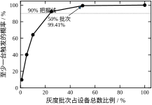
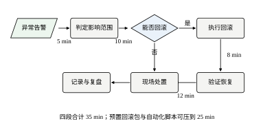
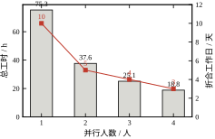
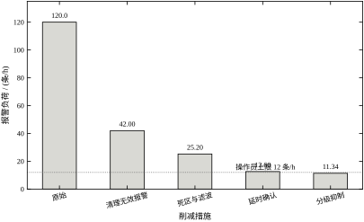
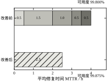
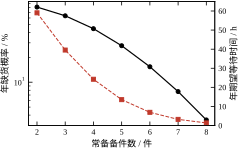
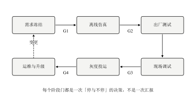
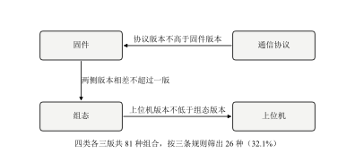
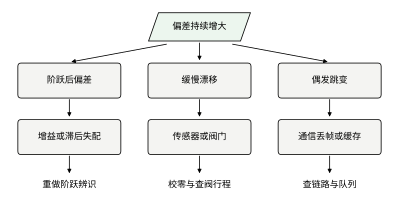
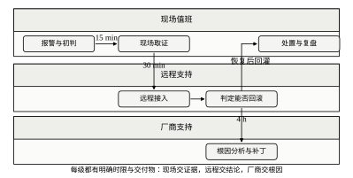

第一个场景：演示很成功，现场拖了三个月。实验室里六个回路一次投通，到了现场，一个阀门行程不对，一个信号量程反了，一个联锁条件写反了。每个问题都不难，难的是每次都要等停机窗口。
第二个场景：升级当晚回退。新版本在原有机柜上跑得好，装上现场那台老控制器后通信中断。现场没有回滚包，只能凭记忆把组态一页页改回去，改了四个小时。
第三个场景：验收会开成了汇报会。业主问报警负荷是多少，答“比原来少多了”；问可用度怎么算的，答“一直很稳定”。会议开了三小时，没有一项能签字。
三个场景的共同点不是技术不行，是没有留下可核对的证据。落地做得好不好，往往不取决于算法多先进，而取决于每个阶段结束时，能不能拿出一张别人能复核的单子。
本章反复用到四个词，含义不同，混用会让责任落空。
交付是把东西交到对方手上，标志是签收单。交付可以发生在系统还不能用的时候。
投运是系统开始承担生产任务，标志是第一个回路投入自动。投运时系统能用，但不一定好用。
验收是按事先约定的指标逐项核对，标志是验收报告。验收要的是数据，不是印象。
运维是投运之后直到退役的整个过程，标志是值班表与备件账。运维期通常比建设期长五到十倍。
四个词的顺序是交付、投运、验收、运维。很多项目把验收放在投运之前，结果验收时没有真实工况数据，只能按实验室数据签，留下隐患。
第 90 章讲软件工程的方法：需求、设计、测试、发布。它回答“代码怎么组织”。
第 91 章讲数字孪生与边缘计算：保真度、同步、在环测试。它回答“模型放在哪、准不准”。
第 92 章讲信息安全：边界、分区、认证。它回答“开放网络里怎么守”。
本章讲的是把这三样串起来的那条线：一个项目从需求冻结走到三年运维，中间要过几道门、每道门要什么证据、出了问题怎么退回去。
所以本章不重复推导 PID，也不展开协议细节。需要时指回第 44、89、90 章。
阶段门是项目阶段之间的检查点，过了才能进下一阶段。门的价值在于“能停”，不能停的门只是汇报。
证据是可复核的记录：数据、截图、签字、日志。形容词不算证据。
版本是固件、组态、上位机、协议四类组件的组合。四类各有版本，组合起来才是“这一套”。
灰度是先让一小部分设备用新版本，观察后再扩大。它是把“一次性风险”切成“可承受的几次风险”。
回退是发现不对时退回上一个可用状态。回退能力要在升级之前就准备好，不能等出事再想。
五个词里最重要的是回退。一个不能回退的系统，任何一次升级都是赌博。
本章的主线只有一句：每个阶段都要有进入条件和退出证据，每次变更都要留好回退路。
进入条件回答“凭什么开始”，退出证据回答“凭什么结束”。两者都不写，阶段就变成了日历上的一个区间。
回退路回答“错了怎么办”。它不是悲观，是把最坏情况的代价提前算清楚。
这条主线贯穿全章：缺陷拦截算的是“早发现省多少”，版本兼容算的是“哪些组合可以承诺”，灰度算的是“多大概率能提前发现”，回滚预算算的是“退回去要多久”。
后面几节讲工期、报警、可用度、备件，都是这条主线在不同侧面的展开。
第一个是 22.7 倍。设计阶段发现一个缺陷的平均修复成本是 1 人时，拖到投运后是 150 人时，期望成本 6.62 对 150，相差 22.7 倍。这个数字回答“为什么要设阶段门”。
第二个是 35 分钟。四段回滚时间相加是 35 min，超过 30 min 的目标；加了预置回滚包与自动脚本后压到 25 min。这个数字回答“回退能力够不够”。
第三个是 4 人 3 天。40 个回路的现场调试，1 个人要 75.3 h（10 个工作日），4 个人并行 18.8 h（3 个工作日）。这个数字回答“现场要派几个人”。
三个数字对应三类决策：投不投入前期评审、要不要做回滚预案、现场排几个人。它们都能在十分钟内算出来，而省下的往往是几周。
本章不做产品选型，不比较哪家 PLC 或哪家云平台。选型取决于供应、备件、既有习惯，没有通用答案。
本章不重复控制算法。整定方法见第 44 章与第 106 章，模型预测见第 58 章与第 80 章，本章只在需要时引用结论。
本章不给报价，也不给人力单价。不同地区、不同行业的差异太大，给了反而误导。本章只给工时与停机小时，换算成钱由读者按自己的口径做。
本章的案例都做了脱敏处理。数字取自脚本与现场记录的量级，不对应任何具体项目。
把六段四门摊到日历上，能看到落地的真实节奏。
第 1 到 2 周做需求冻结。产出基线表、回路清单、数据点表。这两周看起来慢，但它决定了后面所有工作的边界。
第 3 到 6 周做离线仿真。组态、逻辑、人机界面在这里成型，同时跑 MIL 测试。G1 与 G2 之间通常隔四到六周，这是整个项目最安静的一段。
第 7 周做出厂测试。按 26 种允许组合跑回归，67.6 h 的工时摊到五个工作日。G2 通过后设备发运。
第 8 周做现场调试。40 个回路、3 到 4 个人、3 到 4 天，加上前期准备与后期收尾，整周都在现场。G3 通过后开始灰度。
第 9 到 11 周做灰度投运。三批设备，每批观察一到两个班次，中间留修复窗口。G4 通过后全量放开。
第 12 周开始验收。五项指标取证，文档齐套核对，开验收会。
第 13 周进入运维。值班、巡检、备件、变更管理按 §93.10 的节奏走。
这条时间线的前提是“一切按计划”。真实项目里，现场条件不符、设备到货延迟、业主改需求，任何一件都会把它拉长。时间线的作用不是预测，是让每个环节的延期都能被看见——哪一段超了、超了多久、超的原因是什么。
对时间线最常见的一个误解是“可以并行”。仿真与出厂测试可以部分并行，现场调试与灰度不能。灰度必须等现场全部投通，否则观测到的现象分不清是新版本引起的还是未投回路引起的。
第一次读，建议按 §93.1、§93.2.3、§93.2.4、§93.8、§93.10 的顺序。这五节覆盖了“为什么”“灰度怎么定”“回滚怎么算”“参数怎么调”“现场怎么干”，是本章的主干。
要写方案或做评审，重点看 §93.3 与 §93.7。前者给步骤与输出物，后者给参数取值与敏感度排序。
要做实施，重点看 §93.10 与 §93.12。前者是日程与流程，后者是能跑的代码与能查的数。
§93.4 到 §93.6 是方法的细化，可以后读。§93.11 是全章的边界声明，读它是为了避免误用。
如果只有十分钟，读 §93.1.6 的三个数字与 §93.11.12 的一页纸结论，够用了。
落地过程是一条串联的拦截链：设计评审、桌面检查、MIL、HIL、现场调试，每一级拦下一部分缺陷，没拦住的进入下一级。
设第 i 级的检出率为 p_i，则经过 i 级之后仍未发现的缺陷比例为
E_i=\prod_{j\le i}(1-p_j)\tag{93-1}
一个缺陷在第 i 级被发现，前提是前面几级都漏掉了它，概率是 P_i=\left(\prod_{j<i}(1-p_j)\right)p_i。把每级的修复成本按概率加权，再算上逃逸到投运后的那一部分，得到单个缺陷的期望修复成本
C=\sum_i P_i c_i + E\,c_e\tag{93-2}
其中 c_i 是第 i 级的单位修复成本，c_e 是投运后才发现时的成本。
表 93-1 按五级拦截加一个逃逸出口算出全部数。五级检出率分别是 30%、45%、60%、80%、92%，单位成本从 1 人时涨到 150 人时。
| 阶段 | 检出率 / % | 本级拦下 / % | 累计逃逸 / % | 单位成本 / 人时 | 期望成本 / 人时 |
|---|---|---|---|---|---|
| 设计评审 | 30.0 | 30.00 | 70.000 | 1.0 | 0.300 |
| 桌面检查 | 45.0 | 31.50 | 38.500 | 2.0 | 0.630 |
| MIL | 60.0 | 23.10 | 15.400 | 5.0 | 1.155 |
| HIL | 80.0 | 12.32 | 3.080 | 20.0 | 2.464 |
| 现场调试 | 92.0 | 2.83 | 0.246 | 60.0 | 1.700 |
| 投运后发现 | — | — | 0.246 | 150.0 | 0.370 |
| 合计 | — | — | — | — | 6.62 |
表 93-1 的关键不在合计，而在最后一列的形状：前三级便宜但漏得多，后两级拦得住但贵。期望成本 6.62 与全部拖到投运后的 150 相差 22.7 倍，这个倍数就是阶段门的价值。
固件、组态、上位机、协议四类组件各有三个版本，全组合数是
N=\prod_k n_k\tag{93-3}
四类各三版，N=81。全部组合都测一遍，回归工时是
T_{\rm reg}=A\,m\,t(1+\eta)\tag{93-4}
其中 A 是要测的组合数，m 是每组合的用例数，t 是单例时长，\eta 是准备系数。
实际只承诺满足兼容规则的组合：协议版本不高于固件、上位机版本不低于组态、固件与组态相差不超过一版。按这三条筛选，81 种里剩下 26 种，占 32.1%，两种口径的对照见表 93-2。
| 口径 | 组合数 | 用例数 | 工时 / h | 工作日 / 天 |
|---|---|---|---|---|
| 全组合回归 | 81 | 3240 | 210.6 | 27 |
| 只测允许组合 | 26 | 1040 | 67.6 | 9 |
表 93-2 说明兼容矩阵的实际作用：它砍掉的是 68% 的测试量，不是砍掉功能。代价是要对客户明确“不支持哪些组合”，这句话必须写进合同。
灰度解决的问题是：只有少量设备时，能不能提前发现缺陷。
设单台设备触发缺陷的概率为 p，一批有 n 台，至少一台触发的概率是
P_{\rm hit}=1-(1-p)^n\tag{93-5}
p=5\%、设备总数 200 台时，表 93-3 给出各批次的结果。
| 批次占比 / % | 设备数 / 台 | 至少一台触发 / % |
|---|---|---|
| 1 | 2 | 9.75 |
| 5 | 10 | 40.13 |
| 10 | 20 | 64.15 |
| 25 | 50 | 92.31 |
| 50 | 100 | 99.41 |
| 100 | 200 | 100.00 |
表 93-3 的读法是“要看多准才敢全量”。1% 批次只有 9.75% 的把握发现问题，等于没测；10% 批次到 64.15%，已经开始有用；50% 批次 99.41%，但这时候一半设备已经受影响，灰度的意义被削弱。
图 93-3 把这条曲线画出来，拐点在 25% 附近。超过 25% 再增加批次，暴露概率的增幅迅速变小，风险却线性上升。

回滚不是一个动作，是四段时间相加：
T_{\rm rb}=\sum_i t_i\tag{93-6}
四段分别是发现异常、确认与决策、执行回滚、验证恢复。表 93-4 给出本章的取值。
| 阶段 | 耗时 / min | 累计 / min |
|---|---|---|
| 发现异常 | 5.0 | 5.0 |
| 确认与决策 | 10.0 | 15.0 |
| 执行回滚 | 8.0 | 23.0 |
| 验证恢复 | 12.0 | 35.0 |
表 93-4 合计 35 min，比 30 min 的目标多 5 min。三项改进各节省 3、4、3 min，合计压到 25 min，余量 5 min。
三项改进都不涉及技术难度：预置回滚包、自动执行脚本、预演过的验证清单。它们唯一的共同点是必须在升级之前准备好。
图 93-4 把这条链路画成决策流程。判断“能否回滚”是唯一的菱形，答“否”时走现场处置，这条分支在真实项目里用到的概率不低，不能省。

现场调试的工时由三块构成：每个回路都要做的点检、单回路投用、联锁与顺控。总工时除以人数与并行效率，就是工期：
H=\frac{N_{\rm loop}\,t_c+T_0}{m\,\eta}\tag{93-7}
其中 N_{\rm loop} 是回路数，t_c 是单回路工时，T_0 是与回路数无关的固定工时（组态下装、通信建立、联锁总测），m 是并行人数，\eta 是并行效率。
本章取 40 个回路、单回路 1.2 h（点检 0.3、单回路 0.6、联锁 0.3）、固定 16 h、效率 0.85，结果见表 93-5。
| 并行人数 / 人 | 总工时 / h | 折合工作日 / 天 |
|---|---|---|
| 1 | 75.3 | 10 |
| 2 | 37.6 | 5 |
| 3 | 25.1 | 4 |
| 4 | 18.8 | 3 |
表 93-5 的边际收益递减很清楚：从 1 人到 2 人省 5 天，从 3 人到 4 人只省 1 天。原因是固定工时 16 h 不随人数减少，人越多，摊到每个人头上的固定工时越薄，但总也摊不完。
图 93-5 把工时与工作日画在一起。工时是双曲线，工作日是阶梯，两者在 3 人附近开始分离，这个分离就是排班时要看的信号。

报警负荷按措施逐项连乘：
L=L_0\prod_i(1-r_i)\tag{93-8}
其中 L_0 是原始负荷，r_i 是第 i 项措施的削减比例。四项措施依次是清理无效报警、死区与滤波、延时确认、分级抑制，逐项结果见表 93-6。
| 措施 | 削减 / % | 负荷 / (条/h) | 累计降幅 / % |
|---|---|---|---|
| 清理无效报警 | 65 | 42.00 | 65.0 |
| 死区与滤波 | 40 | 25.20 | 79.0 |
| 延时确认 | 50 | 12.60 | 89.5 |
| 分级抑制 | 10 | 11.34 | 90.5 |
表 93-6 的最终负荷 11.34 条/h，比操作员上限 12 条/h 低 0.66。余量不大，说明这四项措施已经用尽，再要下降只能改工艺或加人。
图 93-6 把这四级削减画成瀑布。前两级砍掉 79%，是主要贡献；后两级只再降 11.5 个百分点，但恰好把负荷压到线下，不能省。

可用度是最容易被含糊过去的指标，因为它的定义不止一种。本章用稳态可用度：
A=\frac{MTBF}{MTBF+MTTR}\tag{93-9}
年停机小时由同一组参数给出：
D=8760\,\frac{MTTR}{MTBF+MTTR}\tag{93-10}
本章取 MTBF 为 2000 h，MTTR 由发现、定位、修复、验证四段加路程组成，见表 93-7。
| 阶段 | 耗时 / h | 累计 / h |
|---|---|---|
| 发现 | 0.5 | 0.5 |
| 定位 | 1.5 | 2.0 |
| 修复 | 1.0 | 3.0 |
| 验证 | 0.5 | 3.5 |
| 路程 | 0.5 | 4.0 |
表 93-7 的 MTTR 是 4.0 h，可用度 99.800%，年停机 17.49 h。加远程诊断与备件在库两项改进后，MTTR 降到 2.5 h，可用度 99.875%，年停机 10.94 h。
图 93-8 把改善前后的分段画成两条横条。改善的 1.5 h 全部来自定位与修复，发现与验证两段没变，这提示下一步该往哪投。

备件数量是整数，缺货概率用泊松分布算：
P_{\rm out}=P(X>k),\qquad X\sim\mathrm{Poisson}(\lambda),\quad \lambda=\frac{8760}{MTBF}\tag{93-11}
\lambda=4.38 次/年时，表 93-8 给出 2 到 8 件的缺货概率与年期望等待时间。
| 备件数 / 件 | 缺货概率 / % | 年期望等待 / h |
|---|---|---|
| 2 | 81.247 | 59.04 |
| 3 | 63.706 | 39.54 |
| 4 | 44.498 | 24.25 |
| 5 | 27.672 | 13.57 |
| 6 | 15.389 | 6.93 |
| 7 | 7.703 | 3.24 |
| 8 | 3.495 | 1.39 |
表 93-8 的读法是“愿意等多久”。备件从 4 件加到 6 件，年等待从 24.25 h 降到 6.93 h，降了 17.3 h；再加到 8 件只再降 5.5 h。拐点在 6 件。
图 93-9 用对数纵轴画缺货概率，用右轴画等待时间。两条线在半对数坐标下接近直线，说明这是典型的指数型收益递减。

升级有成功与失败两种结果，按概率加权：
S=p\,s-(1-p)\,\ell\tag{93-12}
其中 p 是成功率，s 是成功时每年节省的停机小时，\ell 是失败时额外损失的停机小时。
p=0.85、s=16 h、\ell=12 h 时，期望年节省 11.8 h。首年要扣掉升级本身的 8 h 停机，净收益 3.8 h，回收期约 0.68 年。
这个算式的意义不是给出一个精确值，而是把“要不要升”变成两个可以讨论的数：成功率与失败损失。成功率靠灰度提高，失败损失靠回滚压低。
验收要一个能签字的数，最简的是达标率：
R=\frac{n_{\rm pass}}{n_{\rm item}}\tag{93-13}
本章五项指标与目标值见表 93-9。
| 指标 | 目标 | 实测 | 结论 |
|---|---|---|---|
| 回路投用率 / % | 95.0 | 96.5 | 达标 |
| 报警负荷 / (条/h) | ≤12.0 | 11.3 | 达标 |
| 数据完整率 / % | 99.0 | 99.4 | 达标 |
| 可用度 / % | 99.8 | 99.875 | 达标 |
| 文档齐套率 / % | 100.0 | 95.0 | 未达标 |
表 93-9 的结果是 4/5，达标率 80%。这一项未达标恰恰说明指标是有效的：文档齐套率不到 100%，就不能签字，不能靠“其他四项都好”来抵消。
十三个公式看起来零散，其实只有三种结构：串联、筛选、期望。
串联结构有三个：缺陷拦截 E_i=\prod_{j\le i}(1-p_j)、回滚时间 T=\sum t_i、报警负荷 L=L_0\prod(1-r_i)。串联的共同点是“环节之间相乘或相加”，任何一环变差，整体就变差，没有互相补偿的余地。
筛选结构有两个：版本组合 N=\prod n_k 与三条兼容规则、备件数对缺货概率的影响。筛选的共同点是“先列全集，再按规则砍”，砍掉的部分要能说清理由。
期望结构有四个：期望修复成本、灰度暴露概率、升级期望收益、可用度。期望的共同点是“用概率加权”，结果是一个平均值，不是某一次的结果。
剩下四个是比值：组合占比、工期、达标率、MTTR 与年停机。比值结构最容易出问题，因为分子分母的定义一变，结论就变。所以本章对每个比值都写了“分子是什么、分母是什么”。
认清结构有一个实际好处：改参数时知道会牵动哪些公式。改检出率只动串联，改兼容规则只动筛选，改成功率只动期望，改指标定义会动比值——最后一类最危险，因为它改的是口径，不是数。
单独看十三个公式，容易忘记它们服务于同一件事。把它们串起来，是一条从“少犯错”到“扛得住”的链。
第一段是少犯错。81 种组合筛到 26 种，测 67.6 h，把能提前发现的问题挡在出厂之前。这一段的目标是降低进入现场的缺陷数。
第二段是早发现。五级拦截的逃逸率 0.246%，意味着每 1000 个缺陷还有 2.5 个漏到现场。灰度的作用是在小范围内把这 2.5 个逼出来，25% 批次有 92.31% 的把握。
第三段是快恢复。漏出去的缺陷一旦触发，回滚 25 min 内完成，影响面控制在一批设备内。这一段的目标不是“不出事”，是“出了事不扩散”。
第四段是扛得住。可用度 99.875%、年停机 10.94 h、备件 6 件，保证系统在长期运行中有足够的恢复能力。这一段的目标是把偶发故障的影响压到可接受范围。
四段对应四个数：26、0.246%、25 min、99.875%。四个数一起看，才是一套完整的落地指标。只看其中一个，会得出片面结论：只看 26 种，会以为测试做够了；只看 99.875%，会以为运维没问题。
链条有一个断点要特别注意：第三段到第四段之间。回滚能力只在故障发生时起作用，故障之后能不能恢复、恢复得多快，靠的是备件与诊断。很多项目把回滚做得很漂亮，备件却没备，结果回滚之后停在那里等件。
落地设计分五步，每一步都要有输出物，没有输出物的一步等于没做。
第一步，划阶段与阶段门。输出是一张流程图与一张门表，图上标清阶段，表里写清每道门的进入条件与退出证据。
第二步，定版本与兼容承诺。输出是兼容矩阵与一份“支持与不支持”清单，清单要能直接写进合同。
第三步，定灰度方案。输出是批次划分、观察时长、暂停条件与回退触发条件。
第四步，定回滚方案。输出是回滚包、回滚脚本、回滚演练记录与时间预算表。
第五步，定验收指标。输出是五项左右的指标、目标值、测量方法与数据来源。
五步的输出物加起来不超过十页，超过十页说明写的是方案，不是落地文件。
阶段的划法各家不同，本章用六段：需求冻结、离线仿真、出厂测试、现场调试、灰度投运、运维与升级。
六段之间设四道门：G1 基线评审、G2 出厂验收、G3 现场验收、G4 灰度评审。图 93-1 画出这六段四门的顺序与回环。
图 93-1 里有一条从“运维与升级”回到“需求冻结”的虚线箭头，标注“变更”。这条线的意思是：运维期发现的改进要走变更流程，不能直接在现场改。没有这条线，现场改动会绕开所有阶段门。

每道门要有进入条件与退出证据，见表 93-10。
| 阶段门 | 进入条件 | 退出证据 | 不通过怎么办 |
|---|---|---|---|
| G1 基线评审 | 需求清单与回路清单冻结 | 基线表签字、数据点表齐全 | 退回需求，不进入仿真 |
| G2 出厂验收 | 出厂测试用例全部执行 | 测试记录、缺陷清单、遗留项说明 | 不带遗留缺陷出厂 |
| G3 现场验收 | 单回路与联锁全部投通 | 调试日志、投用率统计、报警负荷 | 延期投运，不降标准 |
| G4 灰度评审 | 灰度批次观察满两周 | 灰度报告、回滚演练记录 | 暂停扩大，先修再评 |
表 93-10 的第三列是重点。证据要能复印、能归档、能被第三方复核。凡是“口头确认”“大家都不反对”这类描述，都不算证据。
阶段门的另一条规矩是：门可以停，但不能跳。跳门省下的时间，通常在运维期以倍数还回去。
版本设计的第一步是把组件分类。本章分四类：固件、组态、上位机、通信协议。
第二步是给每类定版本号规则。主版本变功能，次版本变接口，修订号只修缺陷。规则要写下来，否则不同团队对“1.2.3 到 1.3.0”的理解会不一样。
第三步是定兼容规则。本章用三条：协议不高于固件、上位机不低于组态、固件与组态相差不超过一版。图 93-2 画出这三条约束。
三条规则筛出 26 种允许组合，占全部 81 种的 32.1%。这意味着测试量降到三分之一，也意味着要明确拒绝 55 种组合。

拒绝清单要写进合同附件，并在发货前核对现场的实际版本。现场最常见的故障不是新版本有缺陷，而是现场装着一个从未被承诺过的组合。
灰度方案要写四件事：批次、观察时长、暂停条件、回退触发条件。
批次按表 93-3 选，本章建议 5%、10%、25%、100% 四批。首批 5% 的作用是“跑通”，不是“发现缺陷”，因为 40.13% 的暴露概率只够发现高频问题。
观察时长按缺陷的表现周期定。与班次相关的缺陷至少观察两个班次，与温度相关的至少观察一周，与月末结账相关的至少观察一个结账周期。
暂停条件要写成可判定的：报警负荷超过上限、同步偏差连续超限、任一回路被迫切手动。写“情况异常时暂停”等于没写。
回退触发条件要比暂停条件更严，一旦触发直接回滚，不再讨论。常见的触发条件是通信中断超过 5 min、控制器重启、数据完整率跌破 99%。
验收指标控制在五项左右。指标太多，每项都测不深；指标太少，容易漏掉关键面。
本章的五项是回路投用率、报警负荷、数据完整率、可用度、文档齐套率。前三项看系统好不好用，第四项看稳不稳，第五项看能不能接手。
每项指标要写清四件事：定义、目标值、测量方法、数据来源。以可用度为例，定义是稳态可用度，目标 99.8%，测量方法是按 MTTR 与 MTBF 计算，数据来源是运维工单系统。
四件事缺一件，验收时就会吵。最常见的争吵是“数据来源不同”：一方用系统日志，一方用值班记录，两个数差 2%。
验收指标要在项目开始时定，不能在验收前定。验收前定的指标，往往是按已有结果倒推的。
把五步的输出压到一页纸，就是落地基线。十行左右，每行写参数、取值、依据。
前四行是阶段与门：阶段数、门数、每道门的证据件数、变更走哪个流程。
中间三行是版本与灰度：允许组合数、灰度批次、观察时长。
后三行是回滚与验收：回滚时间预算、验收指标数、达标线。
一页纸要能贴在会议室墙上。贴不上去，说明还没想清楚。
落地方案写完，用五个问题过一遍，能筛掉大部分隐患。
第一问：这套系统出事时，退回去要多久？答不出分钟数，回滚方案就是空的。
第二问：这一版跑的是哪四类版本，现场在跑的是哪四类？答不出，版本管理就是空的。
第三问：灰度第一批多少台，能发现哪一类缺陷，发现不了哪一类？答不出“发现不了哪一类”，灰度设计就是拍脑袋。
第四问：现场几个人、几天、按什么效率算的？答不出效率系数，工期就是许愿。
第五问：验收五项的数据从哪个系统取，谁来取？答不出系统名，验收就会吵。
五问的顺序对应五个环节：回滚、版本、灰度、工期、验收。答不出的那一问，就是方案里最薄的一环。
五问还可以反向用：作为评审人，先问这五个问题，再听汇报。多数方案在这五问上会露馅，露馅的地方往往正是后来出事的地方。
落地过程里有三条关系可以当连续量处理：工期随人数、负荷随措施、可用度随 MTTR。
这三条都是单调的，方向明确，适合先做粗估。粗估的作用不是给最终答案，是在开会前把数量级定下来，避免在“要不要加人”这类问题上争半小时。
三条关系各有各的形状。工期是双曲线，人数翻倍工时减半，但固定工时让它减不到零；负荷是指数衰减，每加一项措施乘一个小于 1 的系数；可用度是分式，MTTR 越小越接近 1，但永远到不了 1。
形状不同，决策含义也不同。双曲线告诉你边际收益递减，指数告诉你后几项措施越来越不划算，分式告诉你可用度的小数位越来越贵。
把人数 m 当作连续变量，式 93-7 是一条双曲线，渐近线是 H=0，但在 m 较小时下降很陡。
对 m 求导，边际收益是 -\left(N_{\rm loop}t_c+T_0\right)/(\eta m^2)，绝对值随 m 平方衰减。m 从 1 增到 2，斜率降为四分之一；从 3 增到 4，斜率降为九分之一。这就是表 93-5 里“1 到 2 省 5 天、3 到 4 只省 1 天”的原因。
连续近似在 m\ge1 时成立，在 m<1 时没有意义。人数不能取小数，所以在 1 与 2 之间，实际只能选一个。
工程上的用法是：先按连续公式算出“需要几个人”，再向上取整到实际可派的人数，最后用整数重算一遍工期。
把措施看作连续的削减率，负荷可以写成 L=L_0\exp\left(-\sum_i k_i\right)，其中 k_i=-\ln(1-r_i) 是第 i 项措施的对数削减量。四项措施的对数削减量相加，等于总削减量的对数。
指数形式的用处是判断“还差多少”。原始 120 条/h 要降到 12 条/h，需要总削减 90%，即 \sum k_i=\ln 10=2.303。
本章四项措施的 k 分别是 1.050、0.511、0.693、0.105，合计 2.359，刚好超过 2.303。这就是为什么最终负荷 11.34 只是略低于上限，而不是大幅低于。
如果只做前三项，合计 2.254，负荷 12.6 条/h，仍在上限之上。第四项只贡献 0.105，却是“过线”与“不过线”的差别。
式 93-9 在 MTTR 远小于 MTBF 时可以近似为 A\approx1-MTTR/MTBF。
本章 MTTR 4.0 h、MTBF 2000 h，近似值 99.80%，与精确值 99.800% 一致到小数点后三位。
近似成立的边界是 MTTR/MTBF 小于 5%。超过这个比例，分母的修正就不能忽略。例如 MTTR 200 h、MTBF 2000 h，精确值 90.9%，近似值 90.0%，差 0.9 个百分点。
这个近似的价值在于把“提高可用度”翻译成“降低 MTTR 或提高 MTBF”。两个方向的花费不同：降 MTTR 靠备件与远程诊断，提 MTBF 靠冗余与降额。多数项目先降 MTTR，因为便宜。
连续估算在三处会失效，需要换成离散或逐项计算。
第一处是人数很少时。1 人与 2 人的差别不是 50%，而是“能不能并行做联锁”这种质变。连续公式给不出这个差别。
第二处是措施接近极限时。负荷已经接近 0 时，再削减 50% 也只是从 2 条/h 降到 1 条/h，对操作员没有实际意义。指数模型仍然正确，但决策价值消失了。
第三处是可用度的尾部。年停机 17.49 h 是一个平均值，实际可能集中在一次 12 h 的故障里。平均值好看的系统，仍可能有一次长达一天的停机。
三处的共同教训是：连续估算用来排序，不用来承诺。承诺要用离散模型或实测数据。
连续模型的一个实用价值是换算：把“停机小时”换成“可用度”，把“人时”换成“工作日”，把“条/h”换成“每班次条数”，把“批次比例”换成“暴露概率”。
年停机 10.94 h 换成可用度是 99.875%，换成“平均每个季度停 2.7 h”，换成“每次停机 2.5 h 时一年停机 4.4 次”。同一个事实的四种说法，对不同的人有不同的说服力：管理层听百分比，运行人员听次数，财务听小时。
人时换工作日要带两个系数。一个是每天有效工时，本章按 8 h 算，实际按 6 h 更保守；一个是并行效率，本章取 0.85。两个系数乘起来是 0.64 的折扣，忽略它们，工期会少算三分之一。
条/h 换每班次条数乘 8。11.34 条/h 对应每班 90.7 条，一个操作员一个班次处理九十条报警，平均每五分钟一条。这个换算比条/h 更有画面感，也更容易让业主理解“余量薄”意味着什么。
批次比例换暴露概率是本章最常用的一步。25% 换 92.31%，5% 换 40.13%，1% 换 9.75%。换完就能回答“这批到底能不能发现问题”，而不必争论“1% 是不是太小”。
四种换算都不难，难的是口径统一。同一个项目里，有人用自然日、有人用工作日，有人用日历小时、有人用运行小时，最后对不上账。开工时把口径写进一页纸，比事后解释省力得多。
落地过程中大部分数量是整数：回路数、人数、台架数、设备台数、备件数、批次数。
整数带来两个后果。第一是取整误差，按公式算出 2.3 个人，实际只能派 2 个或 3 个。第二是台阶效应，某些区间里增加资源完全不改变结果。
台阶效应比取整误差更值得注意。表 93-5 里，3 人到 4 人只省 1 天，这 1 天是“从 4 天到 3 天”的台阶，不是因为 4 个人更快，而是因为总工时刚好跨过一个工作日边界。
灰度批次按比例算出来是小数，实际按整台设备取。
200 台设备、1% 批次是 2 台，5% 是 10 台，10% 是 20 台，25% 是 50 台。这几个数都能整除，不需要特殊处理。
不能整除时要取整，取整方向影响暴露概率。7% 批次算出 14 台，向上取到 15 台暴露概率略高，向下取到 14 台略低，差别很小。
真正需要注意的是下限。设备总数少于 100 台时，1% 批次不足 1 台，实际只能取 1 台。这时“1%”这个名字具有误导性，应该直接写“首批 1 台”。
版本号不是连续量，不能取 1.5 版。主版本、次版本、修订号都是整数，升级只能一档一档走。
这意味着两件事。第一，“小步快跑”有下限，最小的一步是一个修订号。第二，跨主版本升级不能跳过中间的兼容检查，因为接口可能变了两次。
兼容矩阵因此是一张离散表，不是一条连续曲线。26 种允许组合是 26 个点，点与点之间的组合不存在。
现场最危险的情况是“混搭”：固件升了，组态没升，上位机还是两年前的版本。这种组合往往不在 26 种里，却真实存在。
工期算出来是小时，排到日历上要换成工作日，中间还有周末与节假日。
本章统一按每天 8 h、每周 5 天折算。75.3 h 折 10 个工作日，37.6 h 折 5 个，25.1 h 折 4 个，18.8 h 折 3 个。
折算不是简单除法。25.1 h 除以 8 是 3.14，向上取整是 4 天，而不是 3 天。少算这 0.14 天，排班就会差一天。
节假日的处理更麻烦。春节前后的两周通常不能安排现场调试，因为人手不齐、备件不到。排工期时要把这两周整段跳过。
备件数是整数，缺货概率是离散分布上的尾概率，不能用连续的正态近似代替小样本。
年故障率 4.38 次时，备 4 件的缺货概率是 44.5%，备 6 件是 15.4%，备 8 件是 3.5%。这几个数之间没有线性关系，不能按“多备一件降一点”去估。
备件决策还要看缺货的代价。等待 24 h 换来的停机损失如果远大于一件备件的成本，就该多备；如果设备可以降级运行，等待是可以接受的。
一个常被忽略的点是备件的通用性。同一型号的备件能覆盖三台设备，与只能覆盖一台，库存策略完全不同。
离散情形的三条用法可以概括为：先算连续值，再取整，最后复核台阶。
第一步用连续公式得到量级，第二步按实际可选的档位取整，第三步把取整后的值代回公式，看结果是否跨过了一个台阶。
三步里第三步最容易漏。取整后不复核，就会出现“排了 4 个人，工期还是 3 天”这种看似白干的情况。
三步做完，还要把取整方式写进文档。写“3 人”不够，要写“3 人，向上取整，按 8 h/天折算”。
单个取整误差很小，多个误差叠起来就不可忽略。落地过程里至少有五处会取整：人数、台数、天数、备件数、版本数。
人数向上取整让工期偏短，天数向上取整让工期偏长，两者方向相反，看起来能互相抵消。实际不会抵消，因为它们的量级不同：人数从 2.4 取到 3，工时降 20%；天数从 2.4 取到 3，工期升 25%。取整的净效果取决于哪一个先发生。
台数取整的影响在灰度。200 台的 12.5% 是 25 台，取整没有误差；50 台的 12.5% 是 6.25 台，取 6 台还是 7 台，暴露概率从 26.5% 变到 30.2%，差 3.7 个百分点。小规模系统里，取整误差会盖过设计意图。
备件数取整没有余地，本来就是整数。它的误差来自年故障率的估计：\lambda 从 4.38 估成 3.5，拐点就从 6 件掉到 5 件。
控制取整误差的办法是“误差预算”。在方案里写明每一项可能的取整偏差，加起来不超过总工期的 10%、总暴露概率的 5%，就认为可接受。超出就要调整档位，而不是事后解释。
离散参数的档位不是随便定的，通常取“能被三整除”或“能被二整除”的数。
灰度六档取 1、5、10、25、50、100，是为了让 200 台设备都能整除，算出来的台数干净。如果取 7、13、37，台数就带小数，每次都要解释取整。
人数四档取 1 到 4，对应现场能容纳的最大人数。取到 6、8 没有实际意义，因为控制室挤不下，效率系数会失效。
备件七档取 2 到 8，覆盖“明显不够”到“明显够”的区间。少于 2 件看不出趋势，多于 8 件概率已经接近 0，再算没有信息量。
档位的间隔也有讲究。等差间隔适合看趋势，等比间隔适合看数量级。灰度用等比（1、5、10、25、50、100），因为暴露概率是对数型的；备件用等差，因为等待时间近似线性。
选错间隔的后果是“表看不出来”。用等差画缺货概率，后几点会挤在一起；用等比画工期，前几点会挤在一起。本章图 93-3 用线性轴、图 93-9 用对数轴，就是这个道理。
控制里的稳定是闭环极点不出左半平面。落地里的稳定不是这个意思，它指系统在长期运行中不出现不可恢复的状态。
两者有交集但不重合。一个控制上稳定的系统，可能因为版本升级失败而停摆三天；一个控制上勉强稳定的系统，可能因为回退机制完备而从未影响生产。
本章把稳定拆成三条：能回退、能观测、能复现。
能回退是出错后能退回上一个可用状态。能观测是出问题时能定位到哪一层。能复现是同一现象能再次出现，便于验证修复。
三条缺一条，系统就算“能跑”，也不算“稳”。
回退能力是本章最看重的一条，因为它是唯一能兜住未知缺陷的手段。
未知缺陷无法在设计阶段全部消除。表 93-1 里五级拦截之后仍有 0.246% 逃逸，这部分只能靠回退兜住。
回退要满足三个条件：回滚包在本地、回滚动作可自动、回滚后能验证。三个条件缺一个，回滚时间就会从分钟级涨到小时级。
本章回滚预算 35 min 里，执行只占 8 min，其余 27 min 都花在发现、决策与验证上。这说明回滚慢通常不是技术慢，是流程慢。
缩短回滚时间的有效手段是预置与预演。预置回滚包省 3 min，自动脚本省 4 min，预演过的验证清单省 3 min，合计把 35 min 压到 25 min。
可观测不是装一块大屏，是三个层次的信息都能拿到。
第一层是日志，回答“发生了什么”。日志要带时间戳、设备号、版本号，缺一项就没法关联。
第二层是指标，回答“现在怎么样”。本章关心四个：回路投用率、报警负荷、数据完整率、可用度。
第三层是追踪，回答“为什么这样”。追踪要能串起一次操作的完整链路：从操作员点击，到控制器执行，到现场动作。
三个层次的信息量差一个数量级。只有日志没有指标，看不过来；只有指标没有追踪，定位不了。
落地系统的退化通常有固定顺序，认识这个顺序能提前发现。
第一步是延迟变大。同步变慢、响应变慢，但功能还正常，用户往往感觉不到。
第二步是报警变多。延迟积累到一定程度，偏差超限的次数增加，报警负荷上升。
第三步是人工干预变多。操作员开始频繁切手动，投用率下降。
第四步是停机。某次报警没被及时处理，联锁动作。
四步之间通常有几周甚至几个月。前两步是可逆的，后两步往往要停机才能恢复。所以运维看板上最该盯的是延迟与报警负荷，而不是等停机。
灰度期的稳定性判断与全量期不同，因为它样本少、时间短。
样本少意味着偶发问题看不出来。5% 的缺陷触发率，10 台里至少一台触发的概率是 40%，剩下 60% 的情况是“没触发”，不代表没问题。
时间短意味着慢变问题看不出来。参数漂移、内存泄漏、磁盘写满，都需要几周才显形。
所以灰度期的结论只能是“没发现严重问题”，不能是“没有问题”。灰度通过不等于质量通过，只是允许进入下一批。
灰度期要专门看两类指标：重启次数与内存占用。这两项在短窗口里最容易看出异常。
长周期稳定要看三个月，而不是三天。
第一个月看功能是否齐全。缺的功能会在使用中暴露，尤其是报表与追溯这类边缘功能。
第二个月看性能是否退化。内存、磁盘、响应时间三条曲线，只要有任一条单调上升，就要查。
第三个月看运维是否接得住。新人能不能独立处理一次告警，备件账对不对得上，回滚演练有没有做过。
三个月都过，才可以谈“稳定运行”。只过第一月的系统，通常还在蜜月期。
性能验收不看感觉，看四样东西。
第一样，回路投用率。目标 95%，实测 96.5%，数据来自控制系统自身的投用统计。
第二样，报警负荷。目标不超过 12 条/h，实测 11.34，数据来自报警日志按小时统计。
第三样，数据完整率。目标 99%，实测 99.4%，数据来自采集端的帧计数与入库记录对比。
第四样，可用度。目标 99.8%，实测 99.875%，数据来自运维工单的停机时长。
四样都要有原始记录。只给汇总值不给原始记录，验收时无法复核。
性能可以看数据，稳定性只能靠演练。本章建议做三次，每次都留记录。
第一次是回滚演练。选一个非关键单元，把组态切回上一版再切回来，全程计时。目标 25 min，第一次通常要 40 min 以上，卡点多半在“找不到回滚包”或“不知道验证哪几项”。
第二次是断电演练。把控制器主电源断掉，看备用电源切换、看数据补传、看上位机是否报警。这一项最容易被跳过，因为它要动真设备，风险看着大，但风险远小于半夜真断电。
第三次是通信中断演练。拔掉一条网线或在交换机上禁用端口，观察冗余链路是否接管、切换时间是否在允许范围内、切换期间的数据是否有缺口。第 90 章给的冗余设计，要在这里被验证一次。
三次演练的判据不同。回滚看时间，断电看数据完整性，通信看切换时长与切换期间的操作是否受影响。三个判据都要写成数值，不能写“正常”。
演练之后要修的是流程，不只是设备。第一次回滚演练超时，多半不是技术问题，是没人清楚自己该做什么。把动作写成清单、把清单贴在机柜上，第二次就会快很多。
三次演练做完，稳定性才算“被验证过”。没有演练的稳定性只是“没出过事”，这两者的差别，在下一次真出事时就会显现。
系统不会突然退化，退化是慢慢积累的，能不能发现取决于有没有基线。
基线要在投运时取，取三天到一周的稳定数据。基线包括：扫描周期、控制器负载、通信丢帧率、报警条数、数据库写入延迟。五个量都要存成时间序列，不能只记一个平均值。
有基线之后，退化的判据是“连续偏离”。连续三天偏离基线 10% 以上，就要查；连续一周偏离 5% 以上，也要查。单次偏离不算，因为工艺本身有波动。
最常见的三种退化是：磁盘写满、内存泄漏、通信重传率上升。三者的表现都是“指标缓慢单调上升”，与工艺波动不同——工艺波动是来回摆，退化是单向走。
发现退化之后，处理顺序是先确认再动手。确认的办法是看同型号的其他设备是否也有同样趋势：都有，是软件问题；只有一台，是硬件或配置问题。
退化的处理往往不需要停机。磁盘写满清历史数据，内存泄漏重启服务，通信重传查交换机端口。这三件事都能在运行中做，前提是提前发现了。
本章的参数按用途分五组：阶段与门、版本与灰度、回滚、工期、运维。
五组参数的调整权限不同。阶段与门由项目管理层定，版本与灰度由产品与测试共同定，回滚由运维定，工期由项目经理定，运维指标由业主与集成商共同定。
权限不同意味着不能一个人全改。实际项目里最常见的错误是项目经理为了赶工期，把灰度批次从 10% 直接跳到 100%，跳过了本该由产品与测试共同确认的那一步。
分组还有一个好处：出问题时能快速定位该找谁。灰度出问题找产品与测试，回滚慢找运维，工期紧找项目经理。
阶段数不是一个可以随意增减的参数。本章用六段，是因为六段各自对应一种可交付物，少一段就有一类东西没人负责。
门数比阶段数少两个，因为首段之前与末段之后没有门。四道门分别卡住基线、出厂、现场、灰度四个关键转折。
每道门的证据件数建议三到五件。件数太少，门形同虚设；件数太多，评审变成体力活，最后没人认真看。
门的“不通过怎么办”比“通过条件”更重要。不通过时如果不能退回，门就只是一个记录点。
组件类别数决定组合数的增长方式。四类各三版是 81 种，五类各三版就是 243 种，测试量按指数涨。
版本号规则是硬约束。主版本变功能、次版本变接口、修订号只修缺陷，这条规则一旦松动，“兼容”就没有定义。
灰度批次建议不少于三批。两批的话，第一批出问题只能退回，第三批没有观察期；三批可以做到“小批跑通、中批观察、大批确认”。
观察时长至少覆盖两个班次。只观察一个班次，交接班时的问题看不到，而交接班恰恰是最容易出问题的时刻。
暂停条件要写成数值。写“报警明显增多”没有可执行性，写“超过 12 条/h 连续 30 min”才能自动判定。
回滚时间预算是本章最硬的参数，因为它直接决定故障影响面。
四段时间里，“确认与决策”通常最长，也最容易被压缩。压缩的办法是提前约定触发条件：满足条件直接回滚，不需要开会。
回滚包的大小影响执行时间。回滚包超过 2 GB 时，现场网络传输要十几分钟，这时要改为本地预置。
验证时间不能省。回滚后不验证，等于把系统交给运气。验证清单要在演练时逐条走一遍，把不必要的项删掉。
回滚演练的频率建议每季度一次。演练不是走过场，要真的把生产系统切回去再切回来。
回路数是工期的第一驱动项，单回路工时是第二驱动项，固定工时决定下限。
单回路 1.2 h 的构成是点检 0.3、单回路 0.6、联锁 0.3。三项里联锁最容易低估，因为联锁要与其他专业配合。
并行效率 0.85 是经验值。人越多，协调成本越高，效率越低。超过 4 人时，效率通常要降到 0.8 以下。
每天有效工时按 8 h 算，实际有效时间往往只有 6 h，其余被会议、等待、办票占用。排工期时用 8 h 是乐观值，用 6 h 更接近现场。
报警的原始负荷取决于工艺与组态，通常在 50 到 300 条/h 之间。超过 300 条/h 时，先查仪表与组态，不要急着上措施。
四项措施的削减比例不是固定值，随项目差异很大。清理无效报警通常能砍一半以上，死区与滤波看工艺，延时确认看对象时间常数。
操作员上限 12 条/h 来自行业惯例，不是物理极限。上限的作用是给设计一个靶子，不是给考核一个指标。
MTBF 与 MTTR 都要用自己项目的历史数据。用厂商给的 MTBF 算出来的可用度，通常比实际高一个数量级。
备件数的拐点由年故障率决定。年故障 4.38 次时拐点在 6 件，年故障 2 次时拐点在 3 到 4 件。
缺货等待时间按 24 h 算是保守值。有区域仓库时可以降到 8 h，没有时要按 72 h 算。
升级成功率靠灰度提高，不靠祈祷。做过三次灰度升级的团队，成功率通常在 0.85 以上；从没做过灰度的团队，0.7 都算乐观。
失败损失包括停机、返工、信誉三部分。前两项能算，第三项算不出来，所以失败损失通常被低估。
把上述参数汇总，得到表 93-11。表中每行给出符号、含义、本章取值与作用方向。
| 参数 | 含义 | 取值 | 作用方向 |
|---|---|---|---|
| p_i | 第 i 级缺陷检出率 | 0.30–0.92 | 越大，期望修复成本越低 |
| c_i | 第 i 级单位修复成本 | 1–60 人时 | 越大，越应前置拦截 |
| c_e | 投运后发现成本 | 150 人时 | 决定阶段门的价值 |
| n_k | 各类组件版本数 | 3 | 组合数按乘积增长 |
| A | 允许组合数 | 26 | 决定回归工时 |
| p | 单台缺陷触发率 | 0.05 | 决定灰度把握 |
| n | 灰度批设备数 | 2–200 | 越多越容易暴露 |
| t_i | 回滚各段耗时 | 5–12 min | 相加得回滚总时间 |
| N_{\rm loop} | 回路数 | 40 | 工期第一驱动项 |
| t_c | 单回路工时 | 1.2 h | 工期第二驱动项 |
| \eta | 并行效率 | 0.85 | 越低工期越长 |
| r_i | 报警削减比例 | 0.10–0.65 | 连乘得最终负荷 |
| MTBF | 平均无故障时间 | 2000 h | 越大可用度越高 |
| MTTR | 平均修复时间 | 4.0 h | 越小可用度越高 |
| k | 备件数 | 2–8 件 | 越多缺货概率越低 |
| p_{\rm ok} | 升级成功率 | 0.85 | 决定期望收益 |
表 93-11 的第四列是调参时最该看的一列。它告诉读者改这个参数会往哪个方向变，而不是只给一个数。
参数对结果的影响差别很大，按敏感度排序能省很多试错。
最敏感的是回滚时间与灰度批次。前者一动，故障影响面成倍变化；后者一动，风险与把握同时变化。
其次是回路数与单回路工时。它们直接乘在工期公式上，改动 10% 就带来 10% 的工期变化。
再次是报警削减比例。连乘之后，单项的小改动被放大，但也容易被其他项抵消。
最不敏感的是组件版本数。它只影响组合数与测试量，不影响现场运行。
调参顺序因此是：先定不敏感的（版本数、观察时长），再定中等的（工期参数、报警比例），最后动敏感的（灰度批次、回滚预算）。
本章的参数不是独立的，有三组会互相咬住。
第一组是灰度批次、观察时长、回滚时间。批次越大，暴露越快，但一旦出事影响面越大，对回滚时间的要求越严。三者要一起定。
第二组是回路数、人数、工期。回路数增加，人数不变，工期线性增加；人数增加，工期按双曲线下降，但受固定工时限制。
第三组是 MTBF、备件数、可用度。MTBF 低，备件要多；备件不足，MTTR 变长，可用度下降。
三组耦合的检查方法很土：改一个参数，把另外两个代回去算一遍。三十秒的事，能避免“改好了这个、弄坏了那个”。
阶段数、门数、组件类别数、灰度批次数都是整数，不能取 2.5。
版本号是离散的，只能一档一档升，不能跳。
人数是整数，且受现场容纳能力限制。一个控制室同时挤六个人做调试，效率反而下降。
日期要按工作日排，节假日整段跳过。按自然日排出来的工期，通常会短 20% 左右。
把参数分成“连续”与“离散”两类，先定离散的档位，再调连续的细值，能省掉大量无效试算。
本章的参数没有一个是凭空想的，来源只有三类：历史记录、同类项目、保守假设。
历史记录最可靠。单回路 1.2 h 来自同类装置的实际工时统计，MTBF 2000 h 来自厂商数据与现场故障记录的交集，报警原始负荷 120 条/h 来自投运首周的日志。有记录就用记录，不要用感觉。
同类项目次之。检出率 30%、45%、60%、80%、92% 来自一支做过三个项目的团队的经验，换团队要打折。用别人的数要问清三件事：项目规模、团队构成、测试手段。三件事差一件，数就要调整。
保守假设是兜底。缺货等待 24 h、失败损失 12 h、准备系数 1.30，这三个数没有可靠来源，取的是“宁可高估成本”的方向。保守假设的作用是让方案在最坏情况下仍站得住。
三类来源要标在参数表里。标了来源，别人才知道哪个数可以争、哪个数不能动。历史记录可以复核，同类项目可以类比，保守假设只能讨论。
还有一类数要特别小心：厂商给的指标。厂商给的 MTBF 通常是在实验室条件下测的，现场温度、粉尘、电源质量都会让它变短。用厂商数据时要打一个折扣，本章取 0.5 到 1 之间。
工程落地的调参对象只有四个：门、灰度、工期、运维指标。版本组合不调，它由组件数量决定，调它等于改产品。
四个对象的调整顺序由不可逆性决定。门最先定，因为它决定后面所有活动要不要做；灰度其次，因为它决定暴露节奏；工期再次，它可以被压缩但有下限；运维指标最后，它靠前面的选择自然形成。
倒过来调是常见错误。先把工期压到三天，再回头删阶段、跳灰度，最后报警负荷超限、可用度不达标，只能再加人救火。
调参有一个总原则：改一个，算一遍，记一笔。改两个以上同时算，出了问题说不清是哪一个的贡献。
本章的所有调参经验都围绕一句话：让改动落在敏感度低的地方，把敏感度高的地方留出余量。
五级检出率 30%、45%、60%、80%、92% 是基线值。调它之前要先看差距出在哪一级。
把 HIL 的检出率从 80% 降到 60%，逃逸率从 0.246% 升到 0.493%，期望修复成本从 6.62 升到 8.07。降 20 个点，成本涨 22%，代价不小但还能接受。
把设计评审从 30% 降到 10%，逃逸率从 0.246% 升到 0.317%，期望成本涨到 8.22。涨幅比降 HIL 还大，因为这一级在最前面，它漏掉的缺陷要经过后面四级才能被拦住。
所以真正的经验是：头段不能省，中间段可以压。头段漏需求与接口，后面的阶段很难发现；中段漏的是实现细节，后面还有机会补。
反过来，把某一级的检出率往上提，收益是有上限的。把 HIL 从 80% 提到 95%，逃逸率从 0.246% 降到 0.062%，期望成本降到 5.53，省 1.09 人时。为这 1.09 人时建一套完整的 HIL 台架，通常不划算。
结论：门的作用是防止灾难性漏检，不是追求期望成本最优。把钱花在头段，把中段做到及格，是多数项目的合理选择。
灰度批次是本章敏感度最高的参数。敏感的原因是暴露概率对批次数量呈指数上升。
按 5% 的单台触发率，1% 批次（2 台）只有 9.75% 的把握发现问题，等于没试。5% 批次（10 台）到 40.13%，勉强算一次试。10% 批次（20 台）64.15%，可以接受。25% 批次（50 台）92.31%，已经接近“必然发现”。
所以经验值是：首批不小于 5%，第二批量到 10%，第三批 25%，之后放开。
首批为什么要 ≥5%？因为低于 5% 时暴露概率不到一半，第一批跑通不能证明什么。很多团队首批放 1%，跑通了就以为稳了，结果第二批出问题，前面那一批白跑。
为什么不在 25% 一步到位？因为 25% 一旦出事，影响 50 台，回滚压力和首批完全不同。25% 是“确认”，不是“试”。
批次之间的观察时长也要跟着变。首批观察两个班次，第二批一个班次，第三批半个班次。批次越大，单个问题的影响面越大，但发现问题需要的观察时间越短，因为样本多。
有一个反直觉的结论：灰度批次不是越多越好，但也不能少于三批。两批的做法是“试一下、全放”，中间没有确认环节，等于把 25% 那一步省了。
工期公式给出的四个档位是 1 人 75.3 h（10 天）、2 人 37.6 h（5 天）、3 人 25.1 h（4 天）、4 人 18.8 h（3 天）。
从 1 人到 2 人，工期砍半，收益最大。从 2 人到 3 人，只降 33%。从 3 人到 4 人，降 25%。边际收益按 1/m 衰减，这是公式的结构决定的，不是现场能力问题。
固定工时 16 h 是不可并行部分。当 m 增大到 m\eta 接近固定工时占比时，再加人几乎无用。40 回路的总工时 64 h 里，固定 16 h 占 25%，这是 4 人档之后基本到顶的原因。
现场容纳能力是另一个约束。控制室同时进 4 个人做调试已经很挤，6 个人会互相干扰，效率 0.85 保不住，实际可能掉到 0.7，算出来的工期反而变长。
经验值是：40 回路配 3 到 4 人，工期 3 到 4 天。低于 3 人，工期拉长到 5 天以上，业主等不及；高于 4 人，效率下降抵消人数收益。
如果真的要在 3 天内完成，不要加人，改分母：把点检与接线核对提前到安装阶段做，单回路工时从 1.2 h 降到 0.9 h，3 人档的工期就变成 3 天。这是改结构，不是加资源。
报警负荷从 120 条/h 降到 11.34 条/h，四步的贡献是 65%、40%、50%、10% 的削减比例，对应绝对削减 78、16.8、12.6、1.26 条/h。
第一步“清理无效报警”贡献最大，降 65%。这一步几乎不花钱，只需要把组态里已经废弃的点、重复定义的点、量程错位的点删掉。现场做一次通常能砍一半以上。
第二步“死区与滤波”降 40%，但会带来响应延迟。死区设得太大，小偏差看不见；滤波时间常数设得太大，报警来得太晚。这一步要在工艺允许的范围内做。
第三步“延时确认”降 50%，本质是把瞬时抖动滤掉。延时太短没效果，太长会漏掉真实异常。经验值是按对象时间常数的 2 到 3 倍设。
第四步“分级抑制”只降 10%，作用是压掉衍生报警。一个根源故障引发二十条报警，操作员会淹没在衍生报警里，看不到根源。这一步的价值不在数量，在于让第一条报警显眼。
四步做完是 11.34 条/h，比上限 12 低 0.66 条/h，余量很薄。余量薄意味着工艺一变就可能超限，所以要做两件事：一是把报警负荷做成运行指标，每天统计；二是预留第五步（报警分级重定义）的空间。
这四步的顺序不能换。先滤波后清理，会把该删的点也滤掉；先延时后清理，会掩盖重复定义的报警。先减法，后加工。
MTTR 4.0 h 的构成是发现 0.5、定位 1.5、修复 1.0、验证 0.5，加路程 0.5。四段里定位最长，修复次之。
可用度的公式是 MTBF/(MTBF+MTTR)。MTBF 2000 h 时，MTTR 从 4.0 降到 2.5，可用度从 99.800% 升到 99.875%，年停机从 17.49 h 降到 10.94 h，省 6.55 h。
这 1.5 h 的压缩来自两处：远程诊断省 1.0 h，备件在库省 0.5 h。两处都不改产品，只改运维流程。
远程诊断的前提是控制器支持远程接入，且现场网络允许。这两条不满足时，这一项拿不到。
备件在库的前提是有人愿意压库存。6 件备件对应的年缺货概率 15.389%，年期望等待 6.93 h，这个量级的库存成本通常能被停机损失覆盖。
不建议动发现与验证两段。发现时间靠监测密度，加密监测会增加误报；验证时间靠清单，清单压得太短会漏项。
也不建议靠提高 MTBF 来提可用度。MTBF 从 2000 提到 4000，可用度从 99.875% 升到 99.937%，年停机只降 5.5 h，而换一套更高可靠性的硬件通常要几十万。改 MTTR 便宜，改 MTBF 贵。
备件数的表是 2 件 81.247%、3 件 63.706%、4 件 44.498%、5 件 27.672%、6 件 15.389%、7 件 7.703%、8 件 3.495%。
相邻两件的改善量是 17.54、19.21、16.83、12.28、7.69、4.21 个百分点。第 5 到 6 件降 12.28，第 6 到 7 件只降 7.69，第 7 到 8 件降 4.21。
拐点在 6 件。这个结论不靠眼力，靠相邻差值：当差值降到前一段的 60% 以下时，就是拐点。
为什么不直接买到缺货概率接近零？因为 8 件是 3.495%，要降到 1% 以下需要 10 件以上，而第 9、10 件的边际改善已经不到 2 个百分点，库存成本却按件线性增加。
备件的另一个约束是通用性。6 件同型号备件是浪费，3 种型号各 2 件，覆盖面更广。实际项目通常是“关键件 2 件、常用件 1 件、其他共用”，总量落在 6 到 8 件。
备件清单要跟故障率一起更新。年故障率从 4.38 降到 2.0 时，拐点会从 6 件降到 3 到 4 件，原来的库存就变成沉没成本。
调参的前提是知道哪一项不达标，以及为什么不达标。直接改参数是最后一招。
图 93-7 把“偏差持续增大”按现象形态分成三条分支：阶跃后偏差、缓慢漂移、偶发跳变。
第一步永远是把现象分类。阶跃后偏差指给定值或负荷突变后偏差回不到零，这类问题在参数与模型上；缓慢漂移指偏差一天天变大，这类问题多在传感器与阀门；偶发跳变指数据突然跳一下又回来，这类问题在通信链路。
第二步按分支落到具体原因。阶跃后偏差对增益或滞后失配，办法是重做阶跃辨识；缓慢漂移对传感器或阀门，办法是校零与查阀行程；偶发跳变对通信丢帧或缓存，办法是查链路与队列。
走错分支是最常见的浪费。把缓慢漂移当成参数问题，会反复整定 PID，整完当天正常，第二天又漂；把偶发跳变当成传感器问题，会换掉一个本来完好的变送器，问题还在。
排查要用对照法。同一个偏差在两台相同设备上都出现，是共性问题；只在一台上出现，是个性问题。共性查组态与参数，个性查接线与仪表。
排查要留记录。每次排查写下“现象、假设、验证方法、结论”四栏，三个月后同类问题再出现，可以直接翻记录。
图 93-7 的用法是：拿着现象在树上走一遍，走到第三层就是原因类别，第四层是处置动作。它不告诉你答案，它告诉你该往哪儿找。

树解决“往哪儿找”，图 93-10 解决“谁来找到什么时候”。投运之后，现场值班、远程支持、厂商支持是三级：现场十五分钟内完成报警确认与初判，三十分钟内把证据交到远程；远程接入后判定能否回滚，能回滚就先恢复再分析；四小时内仍定不下来，交厂商做根因分析与补丁。

三级之间靠交付物衔接：现场交证据（原始趋势、报警记录、当时的手动操作），远程交结论（是参数、是配置、还是硬件），厂商交根因（哪一版固件的哪一段逻辑）。缺哪一样，下一级就只能重做上一级的工作，时间在交接处成倍流失。
升级不是甩锅。现场把问题交出去之后仍要跟踪处置结果并参与复盘，因为只有现场知道当时的工况；远程接入之后仍要对回滚决策负责，因为只有远程看得到全部节点的版本分布。三级是并行的责任链，不是串行的接力棒。
调参必须留表，否则下一次调参要从零开始。
记录表至少六列：时间、参数名、原值、新值、改动原因、效果。效果一栏要写数值，不能写“感觉好多了”。
表的作用有三个。一是复盘，出了问题能回溯到哪次改动；二是交接，换人接手时知道哪些参数动过；三是验收，业主问“为什么灰度定 10%”时，表里有当时的计算。
记录表建议跟组态版本一起管。参数改动通常是随组态下发的，两者对不上时，现场跑的和文档写的就不是一回事。
成功案例来自一个 40 回路的改造项目。门按六段四门做，HIL 阶段发现两个协议解析缺陷；灰三分批 5%、10%、25%；首批 10 台在第二个班次发现一个数据刷新缺陷，按预算 25 min 回滚；最终工期 4 天，报警负荷 11.3 条/h，五项验收过四项。唯一没过的是文档齐套率 95%，缺的是联锁逻辑的变更记录。
失败案例来自一个 120 回路的项目。为了赶节点，阶段压到三段，灰度只做一批 2%，回滚包没预置。投放第三天，上位机与固件版本不匹配，出现批量通信中断，回滚时要从总部传 2.3 GB 的包，实际耗时 4 h 17 min。事后统计，直接停机损失 38 h，返工 11 天。
两个案例的差别不在技术，在有没有留回退路。成功案例的 25 min 回滚是事先设计出来的，失败案例的 4 h 是事到临头才发现没有包。
失败案例还有一个细节值得记：他们的版本兼容矩阵是 81 种全测，测了 210 h，但恰恰漏了“固件升、上位机没升”这一种，因为那一版上位机在测试清单里被标成“旧版，不需要测”。全测不等于测对。
第一条忌讳是一次改三个参数。改完效果好，说不清是谁的功劳；效果差，也不知道该退哪一个。
第二条忌讳是拿平均值当目标。报警负荷 11.34 条/h 是平均值，夜班可能 3 条，白班可能 19 条。平均值达标而峰值超限，操作员照样处理不过来。要看分位数，不看平均。
第三条忌讳是只在仿真上调。仿真里回滚只要 30 秒，现场要 25 min；仿真里通信不丢包，现场每天丢几次。参数要在现场用真实数据复核一遍，才算定下来。
第一个故事讲灰度的价值。某项目首批 10 台，第二天发现数据刷新有 3 秒延迟。因为只有 10 台，业主没察觉，团队当晚修好，第二天重放。如果首批是 100 台，这个 3 秒延迟会在交接班时被当成系统故障报上去，后面要花一周解释。
第二个故事讲回滚包的价值。某项目升级失败，现场工程师从抽屉里翻出一张两年前的 U 盘，里面的组态是半年前的版本。用这个版本回退，虽然系统能跑，但少了三个回路。事后复盘，问题不在回滚，在回滚包没人维护。
第三个故事讲参数标定的价值。某项目照搬了同类项目的单回路工时 1.2 h，实际做下来是 2.1 h，因为那套装置的接线端子排布完全不同。两个人做 40 个回路，工期从 5 天变成 8 天，业主扣了违约金。如果开工前用前三个回路标定一次，这个偏差当场就能发现。
三个故事的共同点是：出问题的环节都很朴素——批次、备份、标定。它们不需要高深技术，只需要有人把它们当回事。
本章前面那些公式，作用就是让“当回事”有个具体的尺子。没有尺子，“当回事”会变成“尽量小心”，而“尽量小心”在工期压力下最先被牺牲。
工程落地可以改进的地方只有四类：少犯错、早发现、快恢复、省人力。
“少犯错”对应版本管理与兼容规则，目标是让本来就进不来的缺陷不进来。“早发现”对应阶段门与测试，目标是让进来的缺陷早一阶段被发现。“快恢复”对应回滚与可观测性，目标是让漏出去的缺陷影响面小。“省人力”对应工期与自动化，目标是同样的活少用人时。
四个方向的投入产出差别很大。按本章的算例，回滚从 35 min 压到 25 min 只需三个人日的一次性准备；而把逃逸率从 0.246% 再降一个数量级，需要建 HIL 台架，投入是前者的几十倍。
所以改进的排序不是“哪个最先进做哪个”，是“哪个最便宜先做哪个”。
改进还有一条隐含规则：先做能验证的。做完能不能量化，决定这项改进会不会在半年后被悄悄放弃。
四个方向之间有依赖，不能乱序。
没有可观测性，谈不了快恢复。故障发生了看不见，回滚再快也不知道该回。所以可观测性排在回滚之前。
没有版本规则，谈不了少犯错。版本号乱、兼容关系说不清，灰度就没法判定“这一批跑的是哪一套”。
没有阶段门，谈不了早发现。门是证据的收集点，没有门，缺陷在哪个阶段被发现的都记不下来，也就无法判断该加强哪一段。
没有稳定的基线，谈不了省人力。自动化脚本在天天变的组态上跑，维护成本比手工还高。
依赖顺序可以用一句话概括：先能看见，再能退回；先能分清，再能灰。
按这个顺序，一个从零开始的项目的改进路线是：可观测性→回滚→版本规则→灰度→阶段门→自动化。反过来做，通常是先上自动化脚本，然后发现脚本要跟着每天变的组态改，最后放弃。
回滚时间的四段是发现 5.0、决策 10.0、执行 8.0、验证 12.0，合计 35.0 min，超 30 min 目标 5 min。
三项改进各自打在哪一段上，要先看清楚。预置回滚包打在执行段，省 3 min；自动执行脚本也打在执行段，省 4 min；预演过的验证清单打在验证段，省 3 min。
三项合计省 10 min，落到 25.0 min，余量 5.0 min。余量不是浪费，它是给“这次回滚比预想的复杂”留的空间。
为什么不打决策段？决策段 10 min 看起来最肥，但它省不掉。回滚决策要有人签字，签字前要看证据，这两件事压缩到 3 min 就会出错。可行的办法不是压缩，是预先约定触发条件：满足条件直接执行，把决策从事前移到事后补签。
为什么发现段只有 5 min？因为发现靠监测，5 min 已经是“一轮采集周期加一次判定”的下限。再往下压要靠更密的采集，代价是误报增加。
改进的验收标准要写成“演练实测”。写“预计 25 min”没有意义，要写“连续三次演练都不超过 25 min”。演练时间从第一次到最后一次通常会缩短 20% 到 30%，因为人熟了。
四类组件各三版，全组合 81 种，按 40 例、每例 3 min、准备系数 1.30 算，是 210.6 h，折 27 个工作日。
三条兼容规则筛出 26 种，占 32.1%，工时 67.6 h，折 9 个工作日。省下 143 h。
省下来的不是靠“少测”，是靠“不测不可能的”。三条规则是：协议版本不高于固件版本、上位机版本不低于组态版本、固件与组态相差不超过一版。
这三条规则不是拍脑袋定的，是从接口方向推出来的。协议由固件实现，固件不支持的协议版本一定跑不通；组态由上位机下发，上位机比组态旧就一定解析不了新字段；固件与组态跨两版时，中间版本的迁移逻辑通常已被删掉。
规则的维护成本很低。新增一类组件时，只需要补一条规则，组合数就从 81 变 243，而允许组合不会等比例增长。
规则的风险是“筛掉了本该测的”。上一节那个失败案例就是这么出的：他们把“旧版上位机”整类标成不需要测，而那一类里恰好有一种组合是现场真实在跑的。规则要按现场实际组合校准，不能只按设计意图。
改进的方向因此不是加更多规则，是加一条“现场存量清单”约束：筛出来的 26 种必须覆盖现场在运行的全部组合，不覆盖的补进来。
逃逸率 0.246% 是五级串联的结果。要降低它，最有效的不是加强最后一级，是加强前两级。
原因是乘法结构。逃逸率是各级漏检率的乘积，把某一级的漏检率减半，逃逸率就减半，不管它是第几级。但成本完全不同：设计评审把漏检率从 70% 降到 35%，只需要两个人两天；HIL 把漏检率从 20% 降到 10%，需要一套台架。
所以“左移”在数学上成立：同样的逃逸率改善，越靠左越便宜。
左移的具体做法有三条。一是评审清单化，把历史上出过的问题变成检查项，新项目照着走；二是桌面检查带数据，不看代码看录波，用真实数据跑一遍逻辑；三是 MIL 阶段就把边界工况跑掉，别等到 HIL。
左移的极限在哪里？在于“左边的信息量不够”。设计评审看不到时序细节，桌面检查看不到硬件非线性。有些缺陷只能在 HIL 或现场暴露，硬要左移，会变成在评审会上猜。
一个可用的判据是：某一级检出的缺陷里，如果有超过一半是“上一级本来能发现”的，说明左移还有空间；如果大部分是只有这一级才能发现的，说明位置放对了。
可观测性分三层：日志、指标、追踪。三层的作用不同，缺一层就会在排查时卡住。
日志回答“发生了什么”。要求是带时间戳、带回路号、带前后值。只有一句“通信异常”的日志，等于没有。
指标回答“现在怎么样”。要求是能看趋势、能设阈值。报警负荷、通信丢帧率、扫描周期、控制器负载，这四个是底线指标。
追踪回答“为什么”。要求是一条命令能看到某个回路的完整链条：从现场值到控制器、到上位机、到数据库。链条断在哪一环，问题就在哪一环。
三层里最容易缺的是追踪。日志和指标做起来直观，追踪要做好需要统一的请求标识，前期设计没留，后期补不上。
可观测性的投入产出比很高。本章的远程诊断省 1.0 h MTTR，前提就是能远程看到三层信息；看不到，远程接入也只是远程打电话。
可观测性还有一个副产品：它让阶段门有了证据。出厂测试报告里的数据，来源就是这三层。
改进有边界，三条底线不能碰。
第一条是回滚必须可用。任何改进如果让回滚变复杂，就不做。比如为了统一版本管理，把回滚包做成“只能整体回退”，结果单回路故障也要全系统回退，这就是负改进。
第二条是数据不能丢。为了提性能改采集周期、改缓存策略，必须保证掉电和重启时数据不丢。这条底线在验收里对应“数据完整率 99.4%”。
第三条是安全回路不能被工程改动影响。联锁与急停的逻辑改动要单独走审批，不能跟着常规组态一起灰度。安全回路的验证方式和常规回路不同，混在一起做，两边都做不好。
三条底线的共同点是：它们都是“不可逆”的。回滚不可用、数据丢了、安全逻辑改错了，这三件事都没有第二次机会。
改进要证明有效，需要三样东西：基线、对照、指标。
基线是改进前的数值。回滚 35 min、回归 210.6 h、报警 120 条/h、年停机 17.49 h，这些是基线。没有基线，改进后的数字没有意义。
对照是同一口径下的对比。口径包括：同样的回路数、同样的人数、同样的工艺负荷。换了口径再比，比出来的差异说不清是改进带来的还是条件变化带来的。
指标要选能被改进直接影响的。回滚改进看“演练实测中位数”，回归改进看“允许组合数与覆盖率的乘积”，报警改进看“每班报警条数的 95 分位”。选一个笼统的“系统更稳定了”，没法证伪。
一个实用的做法是先写预期，再测。改进前写下“预计从 35 min 降到 25 min”，改完测出来 27 min，差距 2 min 就要解释。先测后写，人会不自觉地往结果上靠。
改进效果的复查周期建议一个季度。季度太短，数据量不够；年度太长，中间已经换了人和组态。
第一个反例是“为了减少报警把阈值调宽”。报警从 120 条/h 降到 10 条/h，达标了，但三次真实超温没报出来。这种改进在数字上完美，在安全上是倒退。判断办法是同时看“漏报数”，只看总数一定被误导。
第二个反例是“为了缩短工期砍掉联锁调试”。40 回路里联锁占 0.3 h/回路，砍掉能省 12 h，工期从 4 天变 3 天。代价是投运后第一次联锁动作失败，停车 6 h。
第三个反例是“为了统一版本强制所有现场升级”。升级本身没错，错在没有灰度，一次推 200 台。其中 3 台的老旧控制器不支持新固件，刷完起不来，现场停产两天。改进的正确做法是先识别不兼容的 3 台，单独处理。
三个反例的共同点是：改进的收益被计入了，代价没有。任何改进都要把“最坏情况”写进方案，否则它只是把一个显性成本换成了一个隐性风险。
拿“缩短回滚时间”做例子，走一遍 §93.9.8 的三样东西。
基线先测。选一个非关键单元，做三次回滚演练，取中位数。第一次 46 min，第二次 38 min，第三次 35 min，中位数 38 min。这比纸面算的 35 min 还多 3 min，因为现场多了找工具、确认工艺状态这些动作。
对照要同口径。改进前后都用同一个单元、同一批人、同样的工艺负荷。换了人再比，快的那次可能只是人熟。
改进分三步做。第一步把回滚包预置到现场工控机的本地盘，省掉从总部传输的时间；第二步写一个脚本，把停止、替换、启动、自检串起来；第三步把验证清单从二十项删到九项，删掉的十一项是“看一眼就够”的。
改进后再测三次。中位数 26 min，比预期的 25 min 多 1 min。多出来的 1 min 在确认工艺状态上，这个动作不该省，所以接受 26 min，并把预期改成 26 min。
结论要写清适用范围。26 min 是在这个装置、这批人、这个网络条件下测的；换成跨省远程接入，传输那一段会重新变长，26 min 不成立。
整个过程花了两周，其中改进实施只占三天，剩下的是演练与等待停机窗口。这个比例很正常：改进本身不难，难的是找到可以演练的时间。
投运不是一个时刻，是一个过程。本章把“投运”定义为第一台回路切到自动，把“验收”定义为五项指标全部取证完成，两者之间通常隔一到三周。
这两到三周是系统最脆弱的时候。缺陷密度最高，操作员最不熟，备件还没到位，值班表刚排出来。工程落地的质量，主要就取决于这段时间怎么过。
第一周的目标不是“跑得好”，是“看得清”。把三层可观测性跑起来，把报警负荷统计起来，把每一个异常都记下来，比追求零故障更有价值。
第一周最常见的错误是“一切正常就不用管”。报警少不代表没问题，可能是报警被抑制掉了，也可能是数据没采上来。要主动查一遍数据完整率，而不是等业主发现曲线断了。
第一周还要做一件事：把回滚演练一次。不是等出事再演练，是在系统还干净的时候演练，这样出问题时才有肌肉记忆。
第一天做基线采集。全部回路切手动，逐个记录稳态值、阀位、扫描周期，形成投运前的基线。这份基线是后面判断“偏差是否正常”的唯一依据。
第二天到第三天分批投自动。按工艺单元分批，不按回路号分批，因为同一单元的回路互相耦合，分开投会互相干扰。
第四天做扰动试验。给定值阶跃、负荷阶跃各一次，记录响应曲线，与 MIL 阶段的结果比对。偏差超过 20% 就要查原因，按图 93-7 的三条分支走。
第五天统计报警。按班次统计条数与类型，找出前十条高频报警，逐条判断是无效报警还是真实工况。这一步通常能砍掉一半无效报警。
第六天做一次回滚演练。选一个非关键单元，把组态切回上一版，计时，再切回来。目标 25 min，第一次做不到是正常的，要记录卡在哪一段。
第七天开第一次周会。把前六天的记录摊开，定下一周的三个动作。周会不超过一小时，只对事不对人。
现场调试的工时紧，一天的排法直接决定效率。推荐按“上午接线、下午投用、收工前记录”排。
上午做点检与接线核对。这一段需要断电或旁路，必须在工艺负荷低的时候做。40 回路按 0.3 h 算，是 12 h，两个人一个上午刚好。
下午做单回路投用与联锁。这一段需要工艺配合，要在操作员当班、工艺稳定的时候做。单回路 0.6 h 加联锁 0.3 h，40 回路是 36 h，三个人两个下午。
收工前半小时做记录。记录三样：今天投了哪些回路、遇到哪些问题、明天从哪开始。不记录，第二天要花半小时重新熟悉现场。
这个排法有个前提：办票要提前一天。工作票、动火票、临时用电票，任何一张没批下来，上午的计划就废了。办票靠的是沟通，不是技术。
另一个前提是通信要提前打通。现场调试最怕的是“控制器通了、上位机不通”，两边各说各的对。开工前一天要把三层链路各测一次。
验收会不是汇报会，是取证会。每个指标都要有数据来源、采集时间、见证人。
会前一周发验收清单。清单上写清五项指标、目标值、实测值、取证方式、责任人。发晚了，被验收方来不及准备数据，会上只能吵。
会前三天完成预验收。预验收由集成商自己做，把能查的先查一遍。预验收发现的问题当场改，不要留到正式会。
正式会控制在两小时。前一小时逐项过指标，后一小时处理未达标项与遗留问题。超过两小时，人会疲劳，决定质量下降。
未达标项要有处置方案。是限期整改、是降级验收、还是扣款，会上要定下来。写“后续跟进”等于没定。
验收报告要附证据。每个数字后面跟一个文件编号，文件包括趋势记录、测试报告、日志截屏。没有证据的数字，下一次审计就要重做。
回路投用率 96.5% 的取证方式是控制系统自带的投用统计，取验收前连续七天的日平均值。手工数容易错，也容易被质疑。
报警负荷 11.3 条/h 的取证方式是报警日志按小时统计，取七天的 95 分位而不是平均。用平均会把夜班的低负荷摊进来，掩盖白班的峰值。
数据完整率 99.4% 的取证方式是数据库里应有采样点与实际存储点的比值，按天统计。要注意“应有”的定义，通信中断期间的点算不算应有，要在合同里写清。
可用度 99.88% 的取证方式是运行日志里的停机时长统计，分母是日历小时。停机时长要区分计划停机与非计划停机，本章的可用度只算非计划。
文档齐套率 95% 的取证方式是文档清单逐项核对。这一项最容易失分，因为它不靠技术，靠日常积累。
五项里前四项都是自动统计，第五项是人工核对。所以第五项要提前一个月开始准备，别等到验收前一周。
交接口头说的不算，要交三样：文档、账号、备件。
文档不是一套图纸，是“能让人独立运维”的最小集合。包括组态备份、点表、联锁逻辑说明、回路整定参数、故障处理手册。五样缺一样，接手的人就要打电话问。
账号包括控制器、上位机、数据库、历史站四类。交接时要改密码，并且把改后的密码封存。用原来项目组的账号，出问题查不到人。
备件要建账。账上写清型号、数量、存放位置、最低库存。备件不是买了就算交接完，要能在十分钟内找到。
三样之外还有一样隐性东西：联系人清单。谁负责控制器、谁负责网络、谁负责工艺，清单上要有电话。这份清单在半夜出事时最有用。
交接要有签字。签字不是形式，它把“我以为你交了”变成“你确认交了”。没有签字，三个月后扯不清。
投运后的前三个月要有人值班。值班不等于守在控制室，是要保证电话能打通、远程能接入。
响应分三级。一级是安全或环保相关，15 min 内响应；二级是影响生产的，1 h 内响应；三级是不影响生产的，次日处理。
分级要写进值班表。写“随时待命”没有可执行性，写“一级 15 min、二级 1 h”才能排班。
值班表要留冗余。一个人值班，他请假就断线。至少两个人能处理一级问题，其中一人可以是远程支持。
值班记录要跟故障记录合并。每次响应写清时间、现象、处置、恢复时间，这些记录就是 MTTR 的数据来源。没有记录，可用度只能估。
三个月后可以转为巡检制。巡检频次按故障率定，本章的算例是年故障 4.38 次，巡检每周一次足够。
备件账的目的是“十分钟内能找到、能换上”。账目本身简单，难点在分类。
按关键度分三类。A 类是一停就停产的，必须常备；B 类是可以短时旁路的，备一件；C 类是可以外购的，不备或共用。
本章算出的 6 件拐点，对应的就是 A 类加 B 类的总量。具体分配通常是 A 类 3 件、B 类 2 件、C 类 1 件。
账上要写“替代型号”。原型号停产是常态，没有替代型号，备件就是废铁。替代型号要经过实测，不能只看参数表。
备件要定期通电。电子件放两年不用，电容会失效。建议每半年上一次电，跑一次自检。
备件账要跟故障记录联动。某个型号一年换了三次，说明它不是备件问题，是选型问题，要报给设计方。
投运后的每一次改动都要走变更流程。流程不必复杂，但四个环节不能少：申请、评估、执行、验证。
申请要写清改什么、为什么改、不改会怎样。写“优化一下”的申请，一律退回。
评估要写清影响面。改一个回路的整定参数，影响面是一个回路；改通信协议，影响面是全系统。影响面决定要不要灰度。
执行要有回退方案。没有回退方案的变更不批。回退方案包括回滚包位置、执行人、验证清单。
验证要留记录。改完观察多久、看哪些指标、达到什么条件算成功，事前写清。
四个环节里最容易被跳过的是评估。跳过评估的变更，往往在验证阶段才发现影响面比想象的大。
变更记录要跟组态版本绑定。一个版本号对应一批变更，查问题时能一次查到全部改动。
第一个月保稳定。目标是零非计划停机，报警负荷稳定在 12 条/h 以下，数据完整率 99% 以上。这个月不做任何功能改动。
第二个月补短板。把第一个月记录的问题分类，按频次排序，改前三个。同时把文档补齐，尤其是变更记录与联锁说明。
第三个月做优化。在稳定运行的基础上，做一次版本升级或功能扩展，走完整的灰度流程。这次灰度就是团队能力的检验。
三个月路线图的关键是“第一个月不改”。很多项目投运第二周就开始加功能，结果基础没稳住，新功能又带来新问题，最后说不清是哪一个的问题。
三个月后进入常规运维。常规运维的节奏是：每周一次巡检、每月一次指标复盘、每季度一次回滚演练、每年一次版本评估。
路线图要写进合同或备忘录。没有书面约定，第一个月的“不改”很容易被业主的临时需求打破。
周会看三样：本周异常、下周动作、需要谁支持。每样不超过三条，多了记不住。
月报看四组数：可用度、报警负荷、未闭环问题数、变更次数。四组数连起来看趋势，单看一个月的值意义不大。
周会与月报的作用不是汇报，是暴露问题。一个不敢在会上说问题的团队，问题会在地下积累，直到某天集中爆发。
会议记录要留档。三个月后复盘，会议记录是最好的材料，它记录了当时是怎么想的。
周会不要超过一小时，月报不要超过两页。超了，就没人看。
本章的验收算例里，五项过四项，唯一没过的是文档齐套率 95%，目标 100%。
缺的是什么？缺的是联锁逻辑的三次变更记录。这三次变更都做了，也都验证了，但没写进文档。
为什么没写？因为变更时在赶工期，想着“先改，回头补”。回头就是三个月后，补的时候已经记不清改了哪几处。
这一项的失分很典型。它不影响系统运行，不影响安全，但它让验收从“全过”变成“过四项”，业主有理由扣款。
更重要的问题在后面。半年后另一个回路出问题，排查时发现联锁逻辑与图纸不符，多花了两天才找到原因。这两天就是文档缺失的真实代价。
教训有两条。一是变更记录要在变更当天写完，不能等；二是文档齐套率要每周统计一次，别等验收前才发现差 5%。
文档这件事没有技术含量，只有习惯。习惯养成的成本很低，补的成本很高。
现场调试最怕“跑一趟回来发现缺东西”。带三张表，能避免大部分往返。
第一张是回路清单。每行一个回路，列写位号、工艺描述、仪表型号、量程、对应控制器通道、联锁归属、投用状态。清单要在出发前与业主核对一遍，现场改一行，回来改十行。
第二张是问题清单。每行一个问题，列写发现时间、现象、影响回路、临时措施、根本原因、关闭时间。问题清单是调试日志的骨架，也是验收时“遗留项”的来源。
第三张是版本清单。列写控制器固件、组态、上位机、协议的版本号，以及每台设备的实际版本。这张表最容易漏，因为它不是“调试”的一部分，但它是灰度投运的前提。
三张表都用纸质加电子两份。现场环境差，笔记本摔了、没电了、网断了都常见，纸质那份是兜底。
表的格式越简单越好。列太多，现场没时间填；列太少，回来没法分析。七到九列是合适的范围。
三张表在调试结束时要一起归档。缺一张，交接就不完整，后面接手的人要重新摸一遍现场。
第一个月的成功标准不能定成“没出事”，因为没出事可能是运气好、也可能是没人报。
可用的标准有四条。一是非计划停机为零，这条最硬，但样本少，一个月不足以证明。二是报警负荷稳定在 12 条/h 以下，这条样本多，能反映真实运行状态。三是每个异常都有记录，数量不重要，闭环率要到 90% 以上。四是操作员能独立处理至少一次二级告警，不用打电话问厂家。
四条里第四条最容易被忽略，也最能说明系统是否真的交付了。操作员不敢动、不会动，系统就还挂在厂家身上。
第一个月末要做一次复盘，把四条逐一核对。核对的结论要写下来，写“基本达标”没有意义，要写“报警负荷 11.6 条/h，异常 27 项闭环 25 项，操作员独立处理 2 次”。
复盘的目的是定第二个月的动作，不是评功过。哪一条没达标，第二个月就补哪一条，其余不改。
如果四条全部达标，也不要立刻加功能。再稳一个月，让基线更可信，再加功能才不容易把水搅浑。
签字交接不等于事情结束。接手方在头一个月通常会找回来三次，三次都处理好，关系才算稳定。
第一次通常问“这个参数为什么这么设”。答复不要只说数值，要说当时的依据与边界条件，让对方知道改了会怎样。
第二次通常问“这个报警为什么老响”。答复要给出判断方法，而不是直接删掉报警。直接删，下次真异常就没人知道。
第三次通常问“能不能加个报表”。这是好事，说明系统被用起来了。按变更流程走，别当场答应，也别一口回绝。
三件事的处理方式，决定了这套系统能不能在别人手里活下去。
交接的最终标志不是签字，是对方能独立做一次变更、独立回滚一次、独立处理一次告警。这三件事都做到，才算真正交出去了。签字只是开始，能独立运维才是结束。
同样是计算机控制落地，四种形态的重点完全不同。按规模和来源分，见表 93-12。
| 形态 | 典型规模 | 主要风险 | 本章重点 |
|---|---|---|---|
| 单体交付 | 20–60 回路，单一装置 | 现场条件与设计不符 | 阶段门、现场调试工期 |
| 批量复制 | 同一型号 50 台以上 | 版本漂移、局部环境差异 | 版本兼容、灰度批次 |
| 试点扩容 | 先 1 套后 10 套以上 | 试点结论不可复制 | 灰度、验收指标 |
| 存量改造 | 老系统替换，不能长停 | 回滚窗口极短 | 回滚预算、变更管理 |
表中“主要风险”一栏是这一形态最容易出事的地方，不是全部风险。做项目时先看自己属于哪一种，再决定把力气花在哪。
单体交付的规模小，风险集中在现场条件。批量复制规模大，风险集中在版本一致性。试点扩容的风险在“试点成功、扩容失败”这个断点上。存量改造的风险在“改的时候不能停”。
四种形态的共同点是都要过阶段门。差别在于门的证据不一样：单体交付看现场记录，批量复制看版本矩阵，试点扩容看对比数据，存量改造看回滚演练。
工程落地最常听到的评价是“这个系统稳”、“这个团队靠谱”。这类说法没法比较，也没法改进。
本章的做法是把它们换成数：逃逸率 0.246%、期望修复成本 6.62 人时、兼容组合 26 种、灰度暴露概率 92.31%、回滚 25 min、工期 3 天、报警 11.34 条/h、可用度 99.875%、备件 6 件。
换成数之后，三件事变得可能。一是比较，两个方案放在一起看谁的成本低；二是追责，出问题时能定位是哪一环失效；三是改进，知道动哪个数最有效。
这一优点在评审会上最明显。说“我们的测试比较充分”没人信，说“26 种组合、67.6 工时、覆盖现场全部存量”就有人信。
数值也有风险。数算得越细，越容易被当成精确预测。本章的数都是量级估算，误差 20% 是正常的。用它做决策可以，用它做承诺要慎重。
本章的第二个优点是结构性的：从阶段门到灰度到回滚，每一层都有退回的动作。
门不通过可以退回上一阶段；灰度不通过可以停在当前批次；回滚包随时可用；变更可以撤销。这四层回退叠起来，让“出错”从灾难变成事件。
回退能力带来的直接好处是敢做。一个能 25 min 回滚的系统，团队敢做灰度、敢做优化、敢接新需求。一个不能回滚的系统，任何改动都要开会讨论三天。
回退能力的间接好处是可追责。每次回滚都留下记录：什么时候、因为什么、退了哪一版。这些记录积累起来，就是缺陷分布的画像。
回退也有代价。预置回滚包要空间，演练要时间，双版本并行要维护。这些成本要提前算进预算，不能等出事才发现没有。
第三个优点是验收。本章把验收拆成五项指标、五个取证方式、五个达标判据，每一项都能在系统里查到数据。
这让验收从“感觉差不多”变成“逐项打勾”。业主知道要什么，集成商知道交什么，双方不必在会上争。
验收有据还有一个长期好处：它为后续的运维建立了基线。验收时的 11.34 条/h、99.875%、96.5%，就是一年后判断“系统是否退化”的参照。
验收指标要认真选。选错了指标，会引导团队做错事。比如只考核报警总数，团队就会把阈值调宽；只考核可用度，团队就会把计划停机算成非计划。
本章最大的缺点是一切数字都带项目印记。
单回路 1.2 h 来自 40 回路的改造项目，换成 200 回路的新建项目，这个数可能是 2.5 h；检出率 30%、45%、60%、80%、92% 来自一支做过三个项目的团队，换一支新团队，第一级可能只有 15%。
参数不能照搬，但方法可以照搬。照搬参数的项目，算出来的工期往往比实际短一半。
弥补的办法是每个项目先做一次标定。用前三个回路实测单回路工时，用前两周的故障记录估 MTBF，用第一批报警统计估削减比例。标定花三天，能省后面三周的返工。
参数还有一个隐含依赖：它假设团队是稳定的。人员流动超过 30% 时，检出率会明显下降，回滚时间会变长。这一点在项目排期时要留余量。
阶段门在长期省成本，在短期是纯负担。每道门要写证据、要开会、要签字，一个项目四道门，至少多花五到八个人日。
赶节点的项目最恨这个。业主催着投运，集成商还要停下来做评审，双方都不痛快。
短期负担与长期收益的权衡，取决于项目后续还有多长。一个只做一次的单体项目，门的收益可能抵不上成本；一个要做十套的复制项目，门是第一套就该建好的基础设施。
折中的做法是门的形式随规模变。单体项目用检查表代替评审会，半天完成；批量项目必须开评审会，因为一次漏检要乘以十。
不能折中的是“证据”这件事。门可以简化，证据不能省。没有证据的门，等于没有门。
本章讨论的是工程落地，不是控制质量。回路整定得不好、模型辨识得不准、解耦设计得不合理，这些本章都不解决。
一个算法很差的系统，按本章的方法落地，结果是“稳定地差着”。它能投运、能验收、能回滚，但控制指标上不去。
这一点要说清楚，避免误用。本章的位置在第 86 到 93 章的末尾，前面各章解决的是“怎么算得对”，本章解决的是“怎么让它真的跑起来”。
两者的关系是乘法不是加法。算法好、落地差，系统上线即崩；算法差、落地好，系统能跑但不好用。两个都要，缺一个都不行。
实际项目里，落地问题造成的损失通常比算法问题大，因为落地问题影响面广、恢复慢。
本章方法最适合三类场景。
第一类是有明确验收指标的项目。指标一旦写进合同，本章的五项取证方式可以直接用。
第二类是多套复制或分期扩容的项目。版本兼容矩阵与灰度机制，在第二套之后开始产生明显收益。
第三类是不能长时间停产的改造项目。回滚预算与变更管理，是这类项目的生命线。
三类场景的共同点是“错一次代价大”。代价小的项目，用轻量流程就够，不必上全套。
判断标准可以简化成一句：如果这个系统停了，会不会有人半夜打电话。会，就用本章的方法；不会，可以简化。
有四类场景不适合照搬本章。
第一类是实验装置与教学系统。回路少、可停、无验收压力，上六段四门是浪费。
第二类是单次性的小改造。总共 5 个回路，做完全套文档的时间比调试还长。
第三类是算法研究阶段。此时系统还在变，版本管理没有意义，因为每个版本都不打算保留。
第四类是业主明确只要“能跑就行”的项目。这种情况下，本章的价值无法被验收，做了也白做。
不适用的判断要诚实。把方法用在不合适的地方，结果是流程负担重、团队抵触、最后连该用的地方也不用了。
落地之前，用三个问题自检。
第一个问题：这套系统出问题时，最快多久能退回去？答不出具体分钟数，说明回滚没设计。
第二个问题：这一版跑的是哪个版本组合，现场在跑的又是哪个？答不出，说明版本管理没建。
第三个问题：验收时拿什么数据证明达标？答不出，说明指标没定义。
三个问题都答得出，本章的方法基本用上了；有一个答不出，那一个就是最该补的短板。
三个问题的顺序也有讲究。先答回滚，再答版本，最后答验收。因为回滚是底线，版本是前提，验收是结果。
本章与第 90 章的分界在“通信通不通”与“系统能不能交付”。第 90 章解决协议、实时性、冗余，本章假设这些已经通了。
本章与第 91 章的分界在“孪生在不在”与“孪生怎么用”。第 91 章建数字孪生与边缘计算，本章用它们做 HIL 与灰度验证。
本章与第 92 章的分界在“先进控制算不算得出来”与“算出来能不能投”。第 92 章给算法，本章给算法上线的通道。
三章的关系是“能通、能算、能交”。三件事都完成，一套计算机控制系统才算真正交付。
边界清楚的好处是查问题时知道去翻哪一章。通信丢包翻第 90 章，模型不匹配翻第 91 章，算法不收敛翻第 92 章，版本对不上、回滚回不去、验收过不了翻本章。
把本章压成一页纸，是五句话。
第一句：落地的核心不是把系统调好，是让每一次改动都有进入条件、有退出证据、有回退路。
第二句：缺陷越早发现越便宜，五级串联的期望成本是 6.62 人时，全拖到投运后是 150 人时，差 22.7 倍。
第三句：版本组合不必全测，三条兼容规则能把 81 种筛到 26 种，工时从 210.6 h 降到 67.6 h。
第四句：灰度批次的拐点在 25%，低于 5% 等于没试，高于 25% 影响面失控。
第五句：回滚时间要算成四段之和，35 min 压到 25 min 只需三项准备，但这三项必须提前做。
五句话之外还有一句总的：能退回去的系统，才敢往前跑。
现场常见三种落地做法：靠老工程师、靠流程制度、靠工具平台。本章与它们不是替代关系。
靠老工程师的做法，优点是判断快、能处理例外，缺点是人一走经验就断。本章的方法是把老工程师的判断变成参数与清单，让它能被复制。所以它不是否定经验，是给经验一个载体。
靠流程制度的做法，优点是责任清楚、可审计，缺点是容易变成填表。本章特意在每个环节都问“这个证据能不能被复核”，就是在防止流程空转。填表不等于有证据，有证据才叫过门。
靠工具平台的做法，优点是自动化、可追溯，缺点是把流程固化在工具里，改起来慢。本章的兼容矩阵、灰度批次、回滚预算，都可以做成工具里的一个配置项。工具是手段，判断标准还是本章这几条。
三种做法各有一半是对的。老工程师的判断力、流程的责任链、工具的自动化，缺一样都会出问题。本章提供的是把它们串起来的那条线，不是第四种做法。
选择哪一种为主，取决于项目规模。单体小项目以老工程师为主，配一张检查表；批量项目以流程为主，配一套工具；长期运维的平台以工具为主，配少量专家兜底。
code/ch093_sim.py 负责算，code/ch093_figs.py 负责画。两条命令，从 book/ 目录运行。
python code/ch093_sim.py
python code/ch093_figs.py第一条打印九段报告，第二条在 figs/ch093/ 下生成十张图，每张一份 SVG 与一份 PDF，共二十个文件。
两个脚本只依赖标准库 math、numpy 与 matplotlib。没有随机数，不读系统时间，不读环境变量，不写日志文件。同一份代码在任何机器上重跑，输出逐位一致。
这一点不是洁癖。本章的数字要被正文、图、表三处引用，只要有一处不可复现，三处就会对不上。
所有可调量集中在 ch093_sim.py 的文件头部，命名全大写，单位写进注释。表 93-13 给出参数与正文的对应关系。
| 参数 | 取值 | 含义 | 正文位置 |
|---|---|---|---|
PHASES、COST_ESCAPE |
五级、150 人时 | 检出率与修复成本 | §93.2.1 |
COMPONENTS、CASES_PER_COMBO |
四类各三版、40 例 | 版本组合与回归量 | §93.2.2 |
FLEET、P_TRIGGER、BATCH_PCT |
200 台、5%、六档 | 灰度暴露概率 | §93.2.3 |
ROLLBACK_STEPS、ROLLBACK_FIXES |
四段、三项 | 回滚预算 | §93.2.4 |
LOOPS、T_PER_LOOP、T_FIXED、ETA_PARALLEL |
40、1.2 h、16 h、0.85 | 现场调试工期 | §93.2.5 |
ALARM_BASE、ALARM_MEASURES、ALARM_LIMIT |
120 条/h、四项、12 条/h | 报警负荷 | §93.2.6 |
MTBF_H、MTTR_STEPS、TRAVEL_H、MTTR_IMPROVE |
2000 h、四段、0.5 h、两项 | 可用度 | §93.2.7 |
WAIT_PER_STOCKOUT_H、SPARE_K |
24 h、七档 | 备件库存 | §93.2.8 |
P_UPGRADE_OK、SAVE_H_PER_YEAR、LOSS_ON_FAIL_H、UPGRADE_STOP_H |
0.85、16 h、12 h、8 h | 升级决策 | §93.2.9 |
ACCEPT_ITEMS |
五项 | 验收指标 | §93.2.10 |
改参数要成组改，不能只改一个。把 FLEET 从 200 改成 500，BATCH_PCT 的六档对应的台数全部变了，25% 从 50 台变 125 台，暴露概率从 92.31% 涨到 99.84%，“拐点在 25%”这句话就不再成立。
再比如把 LOOPS 从 40 改成 120，T_FIXED 16 h 的占比从 25% 降到 12%，人数从 3 人加到 4 人的边际收益会变大，原来“3 到 4 人封顶”的经验值就要重算。
九段报告与正文章节的对应见表 93-14。正文里每个数字都应该在这张表里找得到出处。
| 段 | 内容 | 主要输出 |
|---|---|---|
[1] |
缺陷拦截 | 五级的检出率、本阶段拦下、累计逃逸、期望成本 |
[2] |
版本兼容 | 81 种总组合、26 种允许组合、67.6 h 与 210.6 h |
[3] |
灰度发布 | 六档批次对应的台数与至少一台触发的概率 |
[4] |
回滚预算 | 四段耗时、累计 35 min、改进后 25 min |
[5] |
现场调试 | 三段工时、四个人数档的总工时与工作日 |
[6] |
报警负荷 | 四项措施后的负荷、累计降幅、与上限的差 |
[7] |
MTTR 与可用度 | 五段耗时、4.0 h 与 2.5 h、年停机小时 |
[8] |
备件库存 | 七档备件数的缺货概率与年期望等待 |
[9] |
验收与升级 | 五项达标情况、达标率、升级期望收益 |
[1] 段有一行特殊：最后一行“投运后发现”没有检出率，脚本单独判断后格式化，所以那一行的列宽与上面五行不同。这是唯一一处格式分支。
phase_table() 用一个循环维护 survive 变量。每进一级，本阶段拦下的比例是 survive * p，然后 survive 乘 (1-p)。循环结束后补一行“投运后发现”，成本是 survive * COST_ESCAPE。
phase_summary() 只做三件事：把第六列求和、取 COST_ESCAPE 作为最坏情况、两者相除。它返回三个数，不打印，方便别的函数复用。
version_table() 用四重循环穷举 3×3×3×3 共 81 种组合，对每一种调 _combo_allowed() 判断。判断逻辑就是三条规则，写成一行布尔与：
return (proto <= fw) and (hmi >= cfg) and (abs(fw - cfg) <= 1)穷举而不是推公式，是因为规则以后可能改。加一条规则只需要改这个函数，不用重新推导组合数。81 次的循环代价可以忽略。
version_full_hours() 复用 version_table() 的总组合数，乘同样的用例数与准备系数，得到 210.6 h。两个数字用同一套系数，对比才公平。
canary_table() 先按比例算台数，max(1, int(round(FLEET * pct / 100))) 保证不会出现 0 台。然后按独立事件算至少一台触发的概率 P_{\rm hit}=1-(1-p)^{n}，其中 n 是这一批的台数，p 是单台触发缺陷的概率。
p 取 5% 是假设值，实际项目要用自己的缺陷密度估。这个数只影响曲线的陡缓，不影响“批次越大越容易暴露”这个结论的方向。
rollback_table() 返回两个东西：逐段累计的表和总时间。表里第三列是累计值，不是剩余值，这样读的时候能直接看出哪一段超了目标。
rollback_after_fix() 用总时间减去三项改进之和。三项改进是正数、代表节省的时间，调用处写 base - save，不写 base + save，方向不能错。
回滚段还有一处细节：ROLLBACK_TARGET_MIN 是 30 min，报告里同时打印“超目标多少”与“改进后余量多少”。前者是 5.0，后者也是 5.0，数字相同但含义相反，容易看错，所以两行分开打印。
commission_table() 先把总工时算出来：LOOPS * T_PER_LOOP + T_FIXED，40×1.2+16=64 h。然后对每个人数档除以 m * ETA_PARALLEL，最后用 math.ceil 折成工作日。
用 ceil 不用 round，是因为工期只能向上取整。算出 3.1 天，实际排 4 天，排 3 天就会延期。
commission_sequence() 返回单回路的三段工时，只用于打印。三段加起来 1.2 h，与 T_PER_LOOP 一致。这两个数写在两处，改一处必须改另一处，脚本里用注释标了出来。
alarm_table() 用一个累乘的 load 变量。每项措施乘 (1-r)，同时记录相对原始负荷的降幅。累乘而不是累加，因为削减比例是相对当前的。
alarm_limit_gap() 重算一遍最终负荷再减上限，得到 −0.66。负数表示还有余量，正数表示超限。报告里用带符号格式打印，正负一眼能看出来。
mttr_table() 累计四段后再加上路程，返回表与 MTTR。availability(mttr) 返回可用度百分数与年停机小时，年停机用 8760 * mttr / (MTBF + mttr) 算，不是简单的 8760 * (1-A)，两者在数值上等价但前者精度更好。
mttr_improved() 从基准 MTTR 里减掉两项改善，得到 2.5 h。它不直接写 2.5，是为了让读者看到 4.0 减 1.0 减 0.5 的过程。
spare_table() 是本章唯一需要小心数值稳定的地方。泊松概率直接用阶乘会溢出：\lambda=4.38 时，x=199 的 199! 远超双精度范围。脚本改成递推，用 P(x)=P(x-1)\cdot\lambda/x 逐项往下算，初值取 P(0)=e^{-\lambda}。
这样只做乘除法，不会溢出，也不损失精度。
拿到概率后，缺货概率是 1-\sum_{x\le k}P(x)，年期望等待是 \sum_{x>k}(x-k)P(x) 乘每次缺货的 24 h。两个求和都截到 199 项，尾部概率已经小于 10^{-100}，截断不影响结果。
accept_table() 要处理两种方向的判据。四项是“实测不低于目标”，报警负荷是“实测不高于目标”，所以循环里有一个条件判断：
ok = actual >= target if name != "报警负荷" else actual <= target用指标名做分支不优雅，但只有五项，加一个方向字段反而更绕。如果以后指标增多，应该在 ACCEPT_ITEMS 里加一列方向。
upgrade_expectation() 返回三个数：期望年节省 0.85\times16-0.15\times12=11.8 h，首年净收益 11.8-8=3.8 h，回收期 8/11.8=0.68 年。
回收期用 if expect > 0 保护，避免除零。期望为负时返回 inf，表示永远收不回。
report() 只做格式化。它按 [1] 到 [9] 的顺序调函数、打印，不做任何计算。所有数字都来自函数返回值，报告里出现的常数只有分隔线与标题。
十张图分两类：流程与架构五张用 flow_styles，数据五张用 plot_styles。对应关系见表 93-15。
| 图号 | 文件 | 类型 | 数据来源 |
|---|---|---|---|
| 图 93-1 | fig_093_01_deploy |
流程图 | 手工布局 |
| 图 93-2 | fig_093_02_version |
框图 | 手工布局 |
| 图 93-3 | fig_093_03_canary |
折线 | canary_table() |
| 图 93-4 | fig_093_04_rollback |
流程图 | 手工布局 |
| 图 93-5 | fig_093_05_commission |
柱线双轴 | commission_table() |
| 图 93-6 | fig_093_06_alarm |
瀑布柱 | alarm_table() |
| 图 93-7 | fig_093_07_troubleshoot |
树状图 | 手工布局 |
| 图 93-8 | fig_093_08_availability |
分段横条 | mttr_table() |
| 图 93-9 | fig_093_09_spare |
半对数双轴 | spare_table() |
| 图 93-10 | fig_093_10_oncall |
泳道图 | 手工布局 |
五张流程与架构图的图元只用了 process、decision、data_io、swimlane、arrow、elbow、label，没有传递函数方块，符合第 86 到 93 章的约束。
图 93-1 用 elbow 画了一条虚线回环，表示变更从运维回到需求冻结。回环是这张图的关键，没有它，六阶段看起来像单向流水线。
图 93-4 把四段时间标在箭头外侧而不是箭头上。标在箭头上会压住方块，这是排版问题，不是内容问题，但读者第一眼就会觉得图乱。
图 93-5 与图 93-9 用了双轴。双轴图的通病是两条线的交点没有物理意义，所以两张图都在图注里写清了左右轴各自的含义。图 93-9 的纵轴用对数，因为缺货概率跨两个数量级，线性轴上后三点会挤在一起。
本章的图号与文件序号是一一对应的，不像第 91 章那样错位。这是因为出图顺序按图号排好了，main() 里依次调用十个函数。
ch093_sim.py 按三层组织：常量区、纯计算函数、报告函数。
最上面是常量区。所有可调量集中在这里，改参数只改这一段，不用往下翻。命名全大写，单位写进注释，每一项后面注一句它属于正文哪一节。
中间是纯计算函数。每个函数只算一件事，返回元组列表或几个数，不打印、不画图、不读文件。纯函数的好处是可以单独调用，也方便手算对照。
最下面是 report()。它只负责格式化，把各函数的返回值排成九段。改输出格式不用动计算，改计算也不影响格式。
三层之间单向依赖：常量被函数读，函数被报告读。反过来调用会让代码难以测试，也容易出现两份不一致的数字。
ch093_figs.py 只做两件事：调 ch093_sim 取数，用样式助手画图。它不重新计算任何量。图里出现的 92.31%、11.34、99.875% 全部来自 ch093_sim，不在这里手写。
实验一：把 P_TRIGGER 从 5% 改成 10%，重跑 [3]。1% 批次（2 台）从 9.75% 涨到 19.00%，25% 批次（50 台）从 92.31% 涨到 99.48%。缺陷越常见，小批次越有用；缺陷罕见时，小批次几乎必然漏过。
实验二：把 FLEET 从 200 改成 50，重跑 [3]。25% 批次只有 12 台，暴露概率从 92.31% 降到 45.96%。这说明“25% 拐点”依赖设备总数，50 台的系统要放到 50% 才能过 90%。
实验三：把 ROLLBACK_FIXES 里的三项全部去掉，重跑 [4]。总时间回到 35.0 min，超目标 5.0 min。反过来只留“预置回滚包”一项，是 32.0 min，还是超。三项要一起做才够。
实验四：把 T_PER_LOOP 从 1.2 改成 0.9，重跑 [5]。总工时从 64 h 降到 52 h，3 人档从 25.1 h 降到 20.4 h，工作日从 4 天变 3 天。这就是 §93.8.4 说的“改分母不加人”。
实验五：把 ALARM_MEASURES 的第二项从 0.40 改成 0.20，重跑 [6]。最终负荷从 11.34 涨到 15.12 条/h，超上限 3.12。四项措施里第二项最敏感，因为它乘在已经削过一遍的基数上。
实验六：把 MTBF_H 从 2000 改成 4000，重跑 [7] 与 [8]。可用度从 99.875% 升到 99.938%，年停机从 10.94 h 降到 5.47 h；但年故障率从 4.38 降到 2.19，备件拐点从 6 件降到 3 到 4 件。一个参数同时动了两段结论，这正是 §93.7.10 第三组耦合的例子。
六个实验做完，参数与结论的关系就比较清楚了。建议至少动手做前三个，因为灰度与回滚是本章最容易在评审会上被质疑的两处。
建议按 [1]、[4]、[3]、[7]、[6] 的顺序读。
先读 [1]，它给阶段门的价值。盯住最后两行：期望成本 6.62，逃逸出口 150，相差 22.7 倍。这个倍数是整章最有力的一个数。
再读 [4]，它给回滚的账。35.0 与 25.0 的对比很直观，但真正要看的是四段各自的占比：决策 10 min、验证 12 min，两段合计 62.9%。
然后读 [3]，它给灰度的判据。注意 1% 那一行的 9.75%，它解释了很多“小批试点成功、大批翻车”的现象。
[7] 给可用度，重点看年停机从 17.49 h 到 10.94 h 的 6.55 h，这 6.55 h 就是运维改进的实际收益。
[6] 给报警，重点看最后一行 −0.66。余量薄，说明这套削减方案刚好够用，没有容错空间。
[2]、[5]、[8]、[9] 留到需要具体数字时再查。
正文里每个数都应该能在报告里找到。找不到就是引用错了，或者算法改了没同步。
回查分三步。先在表 93-14 里按内容定位段号，再在报告里找到那一行，最后在脚本里确认对应的函数与常量。
举例：正文写“26 种、占 32.1%”，查表 93-14 知道在 [2]，报告里对应“允许组合 26 种，占 32.1%”，函数是 version_table()，常量是 COMPONENTS 与三条规则。
再举例：正文写“年期望等待 6.93 h”，查表知道在 [8]，报告里对应“备件 6 件……年期望等待 6.93 h”，函数是 spare_table()。这一项如果对不上，多半是 WAIT_PER_STOCKOUT_H 被改了。
正文与报告不一致时，先怀疑正文。报告是算出来的，正文是抄过来的，抄错比算错常见。但也要看另一种情况：正文改了参数，脚本没改。这时以正文的设计意图为准，回去改脚本。
改参数后必须重跑脚本，再按报告改正文与表。只改一处，是这类书稿最常见的不一致来源。
两个脚本在 Python 3.11 下测试，依赖 numpy 与 matplotlib，不需要联网，也不需要额外的数据文件。
图里的中文依赖系统字体。plot_styles 按宋体、黑体、雅黑的顺序查找，flow_styles 用同样的顺序再补一个 DejaVu。都找不到时退回默认字体，中文会变方框，但脚本不报错。
路径用相对路径，从 book/ 目录运行。换目录运行时，输出会落到错误的位置，检查 figs/ch093/ 是否生成即可判断。
脚本固定 matplotlib 后端为 Agg，服务器上批量出图不需要额外配置。如果要交互查看，把 Agg 改成默认后端即可，但导出结果可能有像素级差异。
第一项，可重现。连跑两次 ch093_sim.py，把输出重定向到两个文件，逐行比对，应当完全一致。
第二项，段落齐全。报告应有九个 [n] 段头，[1] 段应有六行数据，[3] 段应有六档批次，[8] 段应有七档备件。
第三项，图件完整。figs/ch093/ 下应有二十个文件，十张图各一份 SVG 与一份 PDF，且都不为零字节。
还有一项与数字无关但要人工看：打开图 93-1 与图 93-7，确认中文没有变方框、箭头没有压住文字。脚本不会报这类错，只能靠眼睛。
有四类量脚本算不出来，正文里也不该给出具体数值。
第一类是真实的检出率。30%、45%、60%、80%、92% 是假设值，实际取决于团队与项目。正文只把它们当算例，不当结论。
第二类是现场的单回路工时。1.2 h 来自具体项目，换项目要重新标定，脚本给的是量级。
第三类是真实的 MTBF。2000 h 是典型值，厂商给的数字通常偏乐观一个数量级，实际要用自己的故障记录估。
第四类是文档齐套率这类管理指标。它不服从任何公式，只能逐项核对。
这四类量在正文里只给方法，不给“保证值”。看到别人给出这类数值时，先问一句“这个数是哪来的”，答不出就是编的。
改参数看着简单，走完整流程才不留隐患。流程分五步。
第一步查依赖。打开 §93.7.10 的三组耦合，确认要改的参数牵动哪几个。改 MTBF_H 会同时动可用度与备件两段，这两个都要重算。
第二步改常量。只改文件头部，不散落在函数里。改完立刻重跑 ch093_sim.py，看九段报告有没有异常值：概率超过 100%、工时为负、可用度大于 100%，都是配错了。
第三步对正文。按表 93-14 找到引用该参数的段落与表格，逐处更新。数字要抄报告，不要手算。
第四步改图。重跑 ch093_figs.py，打开受影响的图看一眼，确认坐标范围与标注还对得上。改了 FLEET 之后，图 93-3 的横轴刻度可能要跟着改。
第五步记台账。在表 93-11 里加一行，写日期、改什么、改前、改后、影响哪几段、结论。这一步最容易被跳过，也最影响后面的人。
五步走完，一次改动才算收口。跳过第三步，正文与报告会打架；跳过第五步，三个月后没人说得清这个数为什么是这个值。
读完之后要落地，建议只做三件事，不必全套照搬。
第一件，算一遍自己项目的四个数：允许组合数、逃逸率、回滚分钟数、可用度。四个数都能在半小时内估出来，估出来就知道自己最缺哪一块。
第二件，把回滚包预置好。这件事不用等方案批准，也不需要额外预算，只要一个本地盘和一份校验过的备份。它是最便宜的改进，也是最容易被跳过的一件。
第三件，把验收五项的取证方式写进合同附件。写清数据从哪个系统取、谁来取、取哪一段时间的。这一条能省掉验收会上大半的争执。
三件事做完，本章的方法就算用上了。剩下的阶段门、灰度批次、备件账，可以按项目规模逐步补。
如果只记住一句话，记住 §93.11.12 的那句总结：能退回去的系统，才敢往前跑。